Chapter 2
State Management and Drawing Geometric Objects
Chapter Objectives
After reading this chapter, you'll be able to do the following:
- Clear the window to an arbitrary color
- Force any pending drawing to complete
- Draw with any geometric primitive - points, lines, and polygons - in two or three dimensions
- Turn states on and off and query state variables
- Control the display of those primitives - for example, draw dashed lines or outlined polygons
- Specify normal vectors at appropriate points on the surface of solid objects
- Use vertex arrays to store and access a lot of geometric data with only a few function calls
- Save and restore several state variables at once
Although you can draw complex and interesting pictures using OpenGL, they're all constructed from a small number of primitive graphical items. This shouldn't be too surprising - look at what Leonardo da Vinci accomplished with just pencils and paintbrushes.
At the highest level of abstraction, there are three basic drawing operations: clearing the window, drawing a geometric object, and drawing a raster object. Raster objects, which include such things as two-dimensional images, bitmaps, and character fonts, are covered in Chapter 8. In this chapter, you learn how to clear the screen and to draw geometric objects, including points, straight lines, and flat polygons.
You might think to yourself, "Wait a minute. I've seen lots of computer graphics in movies and on television, and there are plenty of beautifully shaded curved lines and surfaces. How are those drawn, if all OpenGL can draw are straight lines and flat polygons?" Even the image on the cover of this book includes a round table and objects on the table that have curved surfaces. It turns out that all the curved lines and surfaces you've seen are approximated by large numbers of little flat polygons or straight lines, in much the same way that the globe on the cover is constructed from a large set of rectangular blocks. The globe doesn't appear to have a smooth surface because the blocks are relatively large compared to the globe. Later in this chapter, we show you how to construct curved lines and surfaces from lots of small geometric primitives.
This chapter has the following major sections:
- "A Drawing Survival Kit" explains how to clear the window and force drawing to be completed. It also gives you basic information about controlling the color of geometric objects and describing a coordinate system.
- "Describing Points, Lines, and Polygons" shows you what the set of primitive geometric objects is and how to draw them.
- "Basic State Management" describes how to turn on and off some states (modes) and query state variables.
- "Displaying Points, Lines, and Polygons" explains what control you have over the details of how primitives are drawn - for example, what diameter points have, whether lines are solid or dashed, and whether polygons are outlined or filled.
- "Normal Vectors" discusses how to specify normal vectors for geometric objects and (briefly) what these vectors are for.
- "Vertex Arrays" shows you how to put lots of geometric data into just a few arrays and how, with only a few function calls, to render the geometry it describes. Reducing function calls may increase the efficiency and performance of rendering.
- "Attribute Groups" reveals how to query the current value of state variables and how to save and restore several related state values all at once.
- "Some Hints for Building Polygonal Models of Surfaces" explores the issues and techniques involved in constructing polygonal approximations to surfaces.
One thing to keep in mind as you read the rest of this chapter is that with OpenGL, unless you specify otherwise, every time you issue a drawing command, the specified object is drawn. This might seem obvious, but in some systems, you first make a list of things to draw. When your list is complete, you tell the graphics hardware to draw the items in the list. The first style is called immediate-mode graphics and is the default OpenGL style. In addition to using immediate mode, you can choose to save some commands in a list (called a display list) for later drawing. Immediate-mode graphics are typically easier to program, but display lists are often more efficient. Chapter 7 tells you how to use display lists and why you might want to use them.
A Drawing Survival Kit
This section explains how to clear the window in preparation for drawing, set the color of objects that are to be drawn, and force drawing to be completed. None of these subjects has anything to do with geometric objects in a direct way, but any program that draws geometric objects has to deal with these issues.
Clearing the Window
Drawing on a computer screen is different from drawing on paper in that the paper starts out white, and all you have to do is draw the picture. On a computer, the memory holding the picture is usually filled with the last picture you drew, so you typically need to clear it to some background color before you start to draw the new scene. The color you use for the background depends on the application. For a word processor, you might clear to white (the color of the paper) before you begin to draw the text. If you're drawing a view from a spaceship, you clear to the black of space before beginning to draw the stars, planets, and alien spaceships. Sometimes you might not need to clear the screen at all; for example, if the image is the inside of a room, the entire graphics window gets covered as you draw all the walls.
At this point, you might be wondering why we keep talking about clearing the window - why not just draw a rectangle of the appropriate color that's large enough to cover the entire window? First, a special command to clear a window can be much more efficient than a general-purpose drawing command. In addition, as you'll see in Chapter 3, OpenGL allows you to set the coordinate system, viewing position, and viewing direction arbitrarily, so it might be difficult to figure out an appropriate size and location for a window-clearing rectangle. Finally, on many machines, the graphics hardware consists of multiple buffers in addition to the buffer containing colors of the pixels that are displayed. These other buffers must be cleared from time to time, and it's convenient to have a single command that can clear any combination of them. (See Chapter 10 for a discussion of all the possible buffers.)
You must also know how the colors of pixels are stored in the graphics hardware known as bitplanes. There are two methods of storage. Either the red, green, blue, and alpha (RGBA) values of a pixel can be directly stored in the bitplanes, or a single index value that references a color lookup table is stored. RGBA color-display mode is more commonly used, so most of the examples in this book use it. (See Chapter 4 for more information about both display modes.) You can safely ignore all references to alpha values until Chapter 6.
As an example, these lines of code clear an RGBA mode window to black:
glClearColor(0.0, 0.0, 0.0, 0.0);
glClear(GL_COLOR_BUFFER_BIT);
The first line sets the clearing color to black, and the next command clears the entire window to the current clearing color. The single parameter to glClear() indicates which buffers are to be cleared. In this case, the program clears only the color buffer, where the image displayed on the screen is kept. Typically, you set the clearing color once, early in your application, and then you clear the buffers as often as necessary. OpenGL keeps track of the current clearing color as a state variable rather than requiring you to specify it each time a buffer is cleared.
Chapter 4 and Chapter 10 talk about how other buffers are used. For now, all you need to know is that clearing them is simple. For example, to clear both the color buffer and the depth buffer, you would use the following sequence of commands:
glClearColor(0.0, 0.0, 0.0, 0.0);
glClearDepth(1.0);
glClear(GL_COLOR_BUFFER_BIT | GL_DEPTH_BUFFER_BIT);
In this case, the call to glClearColor() is the same as before, the glClearDepth() command specifies the value to which every pixel of the depth buffer is to be set, and the parameter to the glClear() command now consists of the bitwise OR of all the buffers to be cleared. The following summary of glClear() includes a table that lists the buffers that can be cleared, their names, and the chapter where each type of buffer is discussed.
- void glClearColor(GLclampf
red, GLclampf green, GLclampf blue,
GLclampf alpha);
Sets the current clearing color for use in clearing color buffers in RGBA mode. (See Chapter 4 for more information on RGBA mode.) The red, green, blue, and alpha values are clamped if necessary to the range [0,1]. The default clearing color is (0, 0, 0, 0), which is black.
void glClear(GLbitfield mask);
Clears the specified buffers to their current clearing values. The mask argument is a bitwise-ORed combination of the values listed in Table 2-1.
Table 2-1 : Clearing Buffers
|
Buffer |
Name |
Reference |
|
Color buffer |
GL_COLOR_BUFFER_BIT |
Chapter 4 |
|
Depth buffer |
GL_DEPTH_BUFFER_BIT |
Chapter 10 |
|
Accumulation buffer |
GL_ACCUM_BUFFER_BIT |
Chapter 10 |
|
Stencil buffer |
GL_STENCIL_BUFFER_BIT |
Chapter 10 |
Before issuing a command to clear multiple buffers, you have to set the values to which each buffer is to be cleared if you want something other than the default RGBA color, depth value, accumulation color, and stencil index. In addition to the glClearColor() and glClearDepth() commands that set the current values for clearing the color and depth buffers, glClearIndex(), glClearAccum(), and glClearStencil() specify the color index, accumulation color, and stencil index used to clear the corresponding buffers. (See Chapter 4 and Chapter 10 for descriptions of these buffers and their uses.)
OpenGL allows you to specify multiple buffers because clearing is generally a slow operation, since every pixel in the window (possibly millions) is touched, and some graphics hardware allows sets of buffers to be cleared simultaneously. Hardware that doesn't support simultaneous clears performs them sequentially. The difference between
glClear(GL_COLOR_BUFFER_BIT | GL_DEPTH_BUFFER_BIT);
and
glClear(GL_COLOR_BUFFER_BIT);
glClear(GL_DEPTH_BUFFER_BIT);
is that although both have the same final effect, the first example might run faster on many machines. It certainly won't run more slowly.
Specifying a Color
With OpenGL, the description of the shape of an object being drawn is independent of the description of its color. Whenever a particular geometric object is drawn, it's drawn using the currently specified coloring scheme. The coloring scheme might be as simple as "draw everything in fire-engine red," or might be as complicated as "assume the object is made out of blue plastic, that there's a yellow spotlight pointed in such and such a direction, and that there's a general low-level reddish-brown light everywhere else." In general, an OpenGL programmer first sets the color or coloring scheme and then draws the objects. Until the color or coloring scheme is changed, all objects are drawn in that color or using that coloring scheme. This method helps OpenGL achieve higher drawing performance than would result if it didn't keep track of the current color.
For example, the pseudocode
set_current_color(red);
draw_object(A);
draw_object(B);
set_current_color(green);
set_current_color(blue);
draw_object(C);
draws objects A and B in red, and object C in blue. The command on the fourth line that sets the current color to green is wasted.
Coloring, lighting, and shading are all large topics with entire chapters or large sections devoted to them. To draw geometric primitives that can be seen, however, you need some basic knowledge of how to set the current color; this information is provided in the next paragraphs. (See Chapter 4 and Chapter 5 for details on these topics.)
To set a color, use the command glColor3f(). It takes three parameters, all of which are floating-point numbers between 0.0 and 1.0. The parameters are, in order, the red, green, and blue components of the color. You can think of these three values as specifying a "mix" of colors: 0.0 means don't use any of that component, and 1.0 means use all you can of that component. Thus, the code
glColor3f(1.0, 0.0, 0.0);
makes the brightest red the system can draw, with no green or blue components. All zeros makes black; in contrast, all ones makes white. Setting all three components to 0.5 yields gray (halfway between black and white). Here are eight commands and the colors they would set.
glColor3f(0.0, 0.0, 0.0); black
glColor3f(1.0, 0.0, 0.0); red
glColor3f(0.0, 1.0, 0.0); green
glColor3f(1.0, 1.0, 0.0); yellow
glColor3f(0.0, 0.0, 1.0); blue
glColor3f(1.0, 0.0, 1.0); magenta
glColor3f(0.0, 1.0, 1.0); cyan
glColor3f(1.0, 1.0, 1.0); white
You might have noticed earlier that the routine to set the clearing color, glClearColor(), takes four parameters, the first three of which match the parameters for glColor3f(). The fourth parameter is the alpha value; it's covered in detail in "Blending" in Chapter 6. For now, set the fourth parameter of glClearColor() to 0.0, which is its default value.
Forcing Completion of Drawing
As you saw in "OpenGL Rendering Pipeline" in Chapter 1, most modern graphics systems can be thought of as an assembly line. The main central processing unit (CPU) issues a drawing command. Perhaps other hardware does geometric transformations. Clipping is performed, followed by shading and/or texturing. Finally, the values are written into the bitplanes for display. In high-end architectures, each of these operations is performed by a different piece of hardware that's been designed to perform its particular task quickly. In such an architecture, there's no need for the CPU to wait for each drawing command to complete before issuing the next one. While the CPU is sending a vertex down the pipeline, the transformation hardware is working on transforming the last one sent, the one before that is being clipped, and so on. In such a system, if the CPU waited for each command to complete before issuing the next, there could be a huge performance penalty.
In addition, the application might be running on more than one machine. For example, suppose that the main program is running elsewhere (on a machine called the client) and that you're viewing the results of the drawing on your workstation or terminal (the server), which is connected by a network to the client. In that case, it might be horribly inefficient to send each command over the network one at a time, since considerable overhead is often associated with each network transmission. Usually, the client gathers a collection of commands into a single network packet before sending it. Unfortunately, the network code on the client typically has no way of knowing that the graphics program is finished drawing a frame or scene. In the worst case, it waits forever for enough additional drawing commands to fill a packet, and you never see the completed drawing.
For this reason, OpenGL provides the command glFlush(), which forces the client to send the network packet even though it might not be full. Where there is no network and all commands are truly executed immediately on the server, glFlush() might have no effect. However, if you're writing a program that you want to work properly both with and without a network, include a call to glFlush() at the end of each frame or scene. Note that glFlush() doesn't wait for the drawing to complete - it just forces the drawing to begin execution, thereby guaranteeing that all previous commands execute in finite time even if no further rendering commands are executed.
There are other situations where glFlush() is useful.
- Software renderers that build image in system memory and don't want to constantly update the screen.
- Implementations that gather sets of rendering commands to amortize start-up costs. The aforementioned network transmission example is one instance of this.
- void glFlush(void);
- Forces previously issued OpenGL commands to begin execution, thus guaranteeing that they complete in finite time.
A few commands - for example, commands that swap buffers in double-buffer mode - automatically flush pending commands onto the network before they can occur.
If glFlush() isn't sufficient for you, try glFinish(). This command flushes the network as glFlush() does and then waits for notification from the graphics hardware or network indicating that the drawing is complete in the framebuffer. You might need to use glFinish() if you want to synchronize tasks - for example, to make sure that your three-dimensional rendering is on the screen before you use Display PostScript to draw labels on top of the rendering. Another example would be to ensure that the drawing is complete before it begins to accept user input. After you issue a glFinish() command, your graphics process is blocked until it receives notification from the graphics hardware that the drawing is complete. Keep in mind that excessive use of glFinish() can reduce the performance of your application, especially if you're running over a network, because it requires round-trip communication. If glFlush() is sufficient for your needs, use it instead of glFinish().
- void glFinish(void);
- Forces all previously issued OpenGL commands to complete. This command doesn't return until all effects from previous commands are fully realized.
Coordinate System Survival Kit
Whenever you initially open a window or later move or resize that window, the window system will send an event to notify you. If you are using GLUT, the notification is automated; whatever routine has been registered to glutReshapeFunc() will be called. You must register a callback function that will
- Reestablish the rectangular region that will be the new rendering canvas
- Define the coordinate system to which objects will be drawn
In Chapter 3 you'll see how to define three-dimensional coordinate systems, but right now, just create a simple, basic two-dimensional coordinate system into which you can draw a few objects. Call glutReshapeFunc(reshape), where reshape() is the following function shown in Example 2-1.
Example 2-1 : Reshape Callback Function
void reshape (int w, int h)
{
glViewport (0, 0, (GLsizei) w, (GLsizei) h);
glMatrixMode (GL_PROJECTION);
glLoadIdentity ();
gluOrtho2D (0.0, (GLdouble) w, 0.0, (GLdouble) h);
}
The internals of GLUT will pass this function two arguments: the width and height, in pixels, of the new, moved, or resized window. glViewport() adjusts the pixel rectangle for drawing to be the entire new window. The next three routines adjust the coordinate system for drawing so that the lower-left corner is (0, 0), and the upper-right corner is (w, h) (See Figure 2-1).
To explain it another way, think about a piece of graphing paper. The w and h values in reshape() represent how many columns and rows of squares are on your graph paper. Then you have to put axes on the graph paper. The gluOrtho2D() routine puts the origin, (0, 0), all the way in the lowest, leftmost square, and makes each square represent one unit. Now when you render the points, lines, and polygons in the rest of this chapter, they will appear on this paper in easily predictable squares. (For now, keep all your objects two-dimensional.)
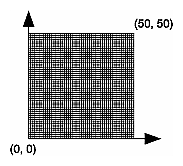
Figure 2-1 : Coordinate System Defined by w = 50, h = 50
Describing Points, Lines, and Polygons
This section explains how to describe OpenGL geometric primitives. All geometric primitives are eventually described in terms of their vertices - coordinates that define the points themselves, the endpoints of line segments, or the corners of polygons. The next section discusses how these primitives are displayed and what control you have over their display.
What Are Points, Lines, and Polygons?
You probably have a fairly good idea of what a mathematician means by the terms point, line, and polygon. The OpenGL meanings are similar, but not quite the same.
One difference comes from the limitations of computer-based calculations. In any OpenGL implementation, floating-point calculations are of finite precision, and they have round-off errors. Consequently, the coordinates of OpenGL points, lines, and polygons suffer from the same problems.
Another more important difference arises from the limitations of a raster graphics display. On such a display, the smallest displayable unit is a pixel, and although pixels might be less than 1/100 of an inch wide, they are still much larger than the mathematician's concepts of infinitely small (for points) or infinitely thin (for lines). When OpenGL performs calculations, it assumes points are represented as vectors of floating-point numbers. However, a point is typically (but not always) drawn as a single pixel, and many different points with slightly different coordinates could be drawn by OpenGL on the same pixel.
Points
A point is represented by a set of floating-point numbers called a vertex. All internal calculations are done as if vertices are three-dimensional. Vertices specified by the user as two-dimensional (that is, with only x and y coordinates) are assigned a z coordinate equal to zero by OpenGL.
Advanced
OpenGL works in the homogeneous coordinates of three-dimensional projective geometry, so for internal calculations, all vertices are represented with four floating-point coordinates (x, y, z, w). If w is different from zero, these coordinates correspond to the Euclidean three-dimensional point (x/w, y/w, z/w). You can specify the w coordinate in OpenGL commands, but that's rarely done. If the w coordinate isn't specified, it's understood to be 1.0. (See Appendix F for more information about homogeneous coordinate systems.)
Lines
In OpenGL, the term line refers to a line segment, not the mathematician's version that extends to infinity in both directions. There are easy ways to specify a connected series of line segments, or even a closed, connected series of segments (see Figure 2-2). In all cases, though, the lines constituting the connected series are specified in terms of the vertices at their endpoints.
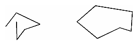
Figure 2-2 : Two Connected Series of Line Segments
Polygons
Polygons are the areas enclosed by single closed loops of line segments, where the line segments are specified by the vertices at their endpoints. Polygons are typically drawn with the pixels in the interior filled in, but you can also draw them as outlines or a set of points. (See "Polygon Details.")
In general, polygons can be complicated, so OpenGL makes some strong restrictions on what constitutes a primitive polygon. First, the edges of OpenGL polygons can't intersect (a mathematician would call a polygon satisfying this condition a simple polygon). Second, OpenGL polygons must be convex, meaning that they cannot have indentations. Stated precisely, a region is convex if, given any two points in the interior, the line segment joining them is also in the interior. See Figure 2-3 for some examples of valid and invalid polygons. OpenGL, however, doesn't restrict the number of line segments making up the boundary of a convex polygon. Note that polygons with holes can't be described. They are nonconvex, and they can't be drawn with a boundary made up of a single closed loop. Be aware that if you present OpenGL with a nonconvex filled polygon, it might not draw it as you expect. For instance, on most systems no more than the convex hull of the polygon would be filled. On some systems, less than the convex hull might be filled.
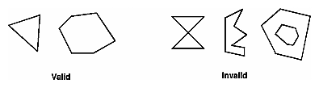
Figure 2-3 : Valid and Invalid Polygons
The reason for the OpenGL restrictions on valid polygon types is that it's simpler to provide fast polygon-rendering hardware for that restricted class of polygons. Simple polygons can be rendered quickly. The difficult cases are hard to detect quickly. So for maximum performance, OpenGL crosses its fingers and assumes the polygons are simple.
Many real-world surfaces consist of nonsimple polygons, nonconvex polygons, or polygons with holes. Since all such polygons can be formed from unions of simple convex polygons, some routines to build more complex objects are provided in the GLU library. These routines take complex descriptions and tessellate them, or break them down into groups of the simpler OpenGL polygons that can then be rendered. (See "Polygon Tessellation" in Chapter 11 for more information about the tessellation routines.)
Since OpenGL vertices are always three-dimensional, the points forming the boundary of a particular polygon don't necessarily lie on the same plane in space. (Of course, they do in many cases - if all the z coordinates are zero, for example, or if the polygon is a triangle.) If a polygon's vertices don't lie in the same plane, then after various rotations in space, changes in the viewpoint, and projection onto the display screen, the points might no longer form a simple convex polygon. For example, imagine a four-point quadrilateral where the points are slightly out of plane, and look at it almost edge-on. You can get a nonsimple polygon that resembles a bow tie, as shown in Figure 2-4, which isn't guaranteed to be rendered correctly. This situation isn't all that unusual if you approximate curved surfaces by quadrilaterals made of points lying on the true surface. You can always avoid the problem by using triangles, since any three points always lie on a plane.
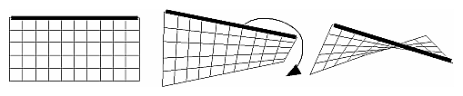
Figure 2-4 : Nonplanar Polygon Transformed to Nonsimple Polygon
Rectangles
Since rectangles are so common in graphics applications, OpenGL provides a filled-rectangle drawing primitive, glRect*(). You can draw a rectangle as a polygon, as described in "OpenGL Geometric Drawing Primitives," but your particular implementation of OpenGL might have optimized glRect*() for rectangles.
- void glRect{sifd}(
TYPEx1, TYPEy1, TYPEx2, TYPEy2);
void glRect{sifd}v(TYPE*v1, TYPE*v2);
Draws the rectangle defined by the corner points (x1, y1) and (x2, y2). The rectangle lies in the plane z=0 and has sides parallel to the x- and y-axes. If the vector form of the function is used, the corners are given by two pointers to arrays, each of which contains an (x, y) pair.
Note that although the rectangle begins with a particular orientation in three-dimensional space (in the x-y plane and parallel to the axes), you can change this by applying rotations or other transformations. (See Chapter 3 for information about how to do this.)
Curves and Curved Surfaces
Any smoothly curved line or surface can be approximated - to any arbitrary degree of accuracy - by short line segments or small polygonal regions. Thus, subdividing curved lines and surfaces sufficiently and then approximating them with straight line segments or flat polygons makes them appear curved (see Figure 2-5). If you're skeptical that this really works, imagine subdividing until each line segment or polygon is so tiny that it's smaller than a pixel on the screen.
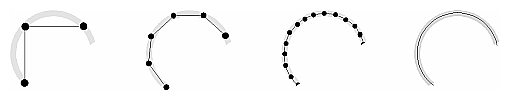
Figure 2-5 : Approximating Curves
Even though curves aren't geometric primitives, OpenGL does provide some direct support for subdividing and drawing them. (See Chapter 12 for information about how to draw curves and curved surfaces.)
Specifying Vertices
With OpenGL, all geometric objects are ultimately described as an ordered set of vertices. You use the glVertex*() command to specify a vertex.
- void glVertex{234}{sifd}[v](
TYPEcoords);
Specifies a vertex for use in describing a geometric object. You can supply up to four coordinates (x, y, z, w) for a particular vertex or as few as two (x, y) by selecting the appropriate version of the command. If you use a version that doesn't explicitly specify z or w, z is understood to be 0 and w is understood to be 1. Calls to glVertex*() are only effective between a glBegin() and glEnd() pair.
Example 2-2 provides some examples of using glVertex*().
Example 2-2 : Legal Uses of glVertex*()
glVertex2s(2, 3);
glVertex3d(0.0, 0.0, 3.1415926535898);
glVertex4f(2.3, 1.0, -2.2, 2.0);
GLdouble dvect[3] = {5.0, 9.0, 1992.0};
glVertex3dv(dvect);
The first example represents a vertex with three-dimensional coordinates (2, 3, 0). (Remember that if it isn't specified, the z coordinate is understood to be 0.) The coordinates in the second example are (0.0, 0.0, 3.1415926535898) (double-precision floating-point numbers). The third example represents the vertex with three-dimensional coordinates (1.15, 0.5, -1.1). (Remember that the x, y, and z coordinates are eventually divided by the w coordinate.) In the final example, dvect is a pointer to an array of three double-precision floating-point numbers.
On some machines, the vector form of glVertex*() is more efficient, since only a single parameter needs to be passed to the graphics subsystem. Special hardware might be able to send a whole series of coordinates in a single batch. If your machine is like this, it's to your advantage to arrange your data so that the vertex coordinates are packed sequentially in memory. In this case, there may be some gain in performance by using the vertex array operations of OpenGL. (See "Vertex Arrays.")
OpenGL Geometric Drawing Primitives
Now that you've seen how to specify vertices, you still need to know how to tell OpenGL to create a set of points, a line, or a polygon from those vertices. To do this, you bracket each set of vertices between a call to glBegin() and a call to glEnd(). The argument passed to glBegin() determines what sort of geometric primitive is constructed from the vertices. For example, Example 2-3> specifies the vertices for the polygon shown in Figure 2-6.
Example 2-3 : Filled Polygon
glBegin(GL_POLYGON);
glVertex2f(0.0, 0.0);
glVertex2f(0.0, 3.0);
glVertex2f(4.0, 3.0);
glVertex2f(6.0, 1.5);
glVertex2f(4.0, 0.0);
glEnd();
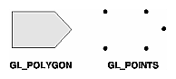
Figure 2-6 : Drawing a Polygon or a Set of Points
If you had used GL_POINTS instead of GL_POLYGON, the primitive would have been simply the five points shown in Figure 2-6. Table 2-2 in the following function summary for glBegin() lists the ten possible arguments and the corresponding type of primitive.
- void glBegin(GLenum
mode);
Marks the beginning of a vertex-data list that describes a geometric primitive. The type of primitive is indicated by mode, which can be any of the values shown in Table 2-2.
Table 2-2 : Geometric Primitive Names and Meanings
|
Value |
Meaning |
|
GL_POINTS |
individual points |
|
GL_LINES |
pairs of vertices interpreted as individual line segments |
|
GL_LINE_STRIP |
series of connected line segments |
|
GL_LINE_LOOP |
same as above, with a segment added between last and first vertices |
|
GL_TRIANGLES |
triples of vertices interpreted as triangles |
|
GL_TRIANGLE_STRIP |
linked strip of triangles |
|
GL_TRIANGLE_FAN |
linked fan of triangles |
|
GL_QUADS |
quadruples of vertices interpreted as four-sided polygons |
|
GL_QUAD_STRIP |
linked strip of quadrilaterals |
|
GL_POLYGON |
boundary of a simple, convex polygon |
void glEnd(void);
- Marks the end of a vertex-data list.
Figure 2-7 shows examples of all the geometric primitives listed in Table 2-2. The paragraphs that follow the figure describe the pixels that are drawn for each of the objects. Note that in addition to points, several types of lines and polygons are defined. Obviously, you can find many ways to draw the same primitive. The method you choose depends on your vertex data.
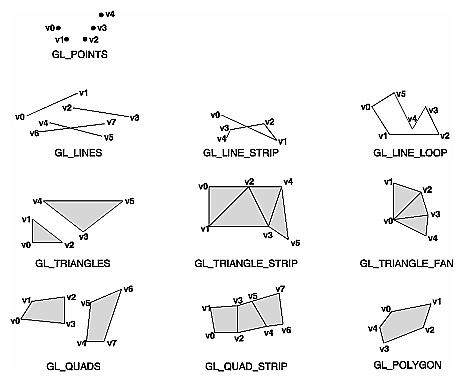
Figure 2-7 : Geometric Primitive Types
As you read the following descriptions, assume that n vertices (v0, v1, v2, ... , vn-1) are described between a glBegin() and glEnd() pair.
|
GL_POINTS |
Draws a point at each of the n vertices. |
|
GL_LINES |
Draws a series of unconnected line segments. Segments are drawn between v0 and v1, between v2 and v3, and so on. If n is odd, the last segment is drawn between vn-3 and vn-2, and vn-1 is ignored. |
|
GL_LINE_STRIP |
Draws a line segment from v0 to v1, then from v1 to v2, and so on, finally drawing the segment from vn-2 to vn-1. Thus, a total of n-1 line segments are drawn. Nothing is drawn unless n is larger than 1. There are no restrictions on the vertices describing a line strip (or a line loop); the lines can intersect arbitrarily. |
|
GL_LINE_LOOP |
Same as GL_LINE_STRIP, except that a final line segment is drawn from vn-1 to v0, completing a loop. |
|
GL_TRIANGLES |
Draws a series of triangles (three-sided polygons) using vertices v0, v1, v2, then v3, v4, v5, and so on. If n isn't an exact multiple of 3, the final one or two vertices are ignored. |
|
GL_TRIANGLE_STRIP |
Draws a series of triangles (three-sided polygons) using vertices v0, v1, v2, then v2, v1, v3 (note the order), then v2, v3, v4, and so on. The ordering is to ensure that the triangles are all drawn with the same orientation so that the strip can correctly form part of a surface. Preserving the orientation is important for some operations, such as culling. (See "Reversing and Culling Polygon Faces") n must be at least 3 for anything to be drawn. |
|
GL_TRIANGLE_FAN |
Same as GL_TRIANGLE_STRIP, except that the vertices are v0, v1, v2, then v0, v2, v3, then v0, v3, v4, and so on (see Figure 2-7). |
|
GL_QUADS |
Draws a series of quadrilaterals (four-sided polygons) using vertices v0, v1, v2, v3, then v4, v5, v6, v7, and so on. If n isn't a multiple of 4, the final one, two, or three vertices are ignored. |
|
GL_QUAD_STRIP |
Draws a series of quadrilaterals (four-sided polygons) beginning with v0, v1, v3, v2, then v2, v3, v5, v4, then v4, v5, v7, v6, and so on (see Figure 2-7). n must be at least 4 before anything is drawn. If n is odd, the final vertex is ignored. |
|
GL_POLYGON |
Draws a polygon using the points v0, ... , vn-1 as vertices. n must be at least 3, or nothing is drawn. In addition, the polygon specified must not intersect itself and must be convex. If the vertices don't satisfy these conditions, the results are unpredictable. |
Restrictions on Using glBegin() and glEnd()
The most important information about vertices is their coordinates, which are specified by the glVertex*() command. You can also supply additional vertex-specific data for each vertex - a color, a normal vector, texture coordinates, or any combination of these - using special commands. In addition, a few other commands are valid between a glBegin() and glEnd() pair. Table 2-3 contains a complete list of such valid commands.
Table 2-3 : Valid Commands between glBegin() and glEnd()
|
Command |
Purpose of Command |
Reference |
|
glVertex*() |
set vertex coordinates |
Chapter 2 |
|
glColor*() |
set current color |
Chapter 4 |
|
glIndex*() |
set current color index |
Chapter 4 |
|
glNormal*() |
set normal vector coordinates |
Chapter 2 |
|
glTexCoord*() |
set texture coordinates |
Chapter 9 |
|
glEdgeFlag*() |
control drawing of edges |
Chapter 2 |
|
glMaterial*() |
set material properties |
Chapter 5 |
|
glArrayElement() |
extract vertex array data |
Chapter 2 |
|
glEvalCoord*(), glEvalPoint*() |
generate coordinates |
Chapter 12 |
|
glCallList(), glCallLists() |
execute display list(s) |
Chapter 7 |
No other OpenGL commands are valid between a glBegin() and glEnd() pair, and making most other OpenGL calls generates an error. Some vertex array commands, such as glEnableClientState() and glVertexPointer(), when called between glBegin() and glEnd(), have undefined behavior but do not necessarily generate an error. (Also, routines related to OpenGL, such as glX*() routines have undefined behavior between glBegin() and glEnd().) These cases should be avoided, and debugging them may be more difficult.
Note, however, that only OpenGL commands are restricted; you can certainly include other programming-language constructs (except for calls, such as the aforementioned glX*() routines). For example, Example 2-4 draws an outlined circle.
Example 2-4 : Other Constructs between glBegin() and glEnd()
#define PI 3.1415926535898
GLint circle_points = 100;
glBegin(GL_LINE_LOOP);
for (i = 0; i < circle_points; i++) {
angle = 2*PI*i/circle_points;
glVertex2f(cos(angle), sin(angle));
}
glEnd();
Note: This example isn't the most efficient way to draw a circle, especially if you intend to do it repeatedly. The graphics commands used are typically very fast, but this code calculates an angle and calls the sin() and cos() routines for each vertex; in addition, there's the loop overhead. (Another way to calculate the vertices of a circle is to use a GLU routine; see "Quadrics: Rendering Spheres, Cylinders, and Disks" in Chapter 11.) If you need to draw lots of circles, calculate the coordinates of the vertices once and save them in an array and create a display list (see Chapter 7), or use vertex arrays to render them.
Unless they are being compiled into a display list, all glVertex*() commands should appear between some glBegin() and glEnd() combination. (If they appear elsewhere, they don't accomplish anything.) If they appear in a display list, they are executed only if they appear between a glBegin() and a glEnd(). (See Chapter 7 for more information about display lists.)
Although many commands are allowed between glBegin() and glEnd(), vertices are generated only when a glVertex*() command is issued. At the moment glVertex*() is called, OpenGL assigns the resulting vertex the current color, texture coordinates, normal vector information, and so on. To see this, look at the following code sequence. The first point is drawn in red, and the second and third ones in blue, despite the extra color commands.
glBegin(GL_POINTS);
glColor3f(0.0, 1.0, 0.0); /* green */
glColor3f(1.0, 0.0, 0.0); /* red */
glVertex(...);
glColor3f(1.0, 1.0, 0.0); /* yellow */
glColor3f(0.0, 0.0, 1.0); /* blue */
glVertex(...);
glVertex(...);
glEnd();
You can use any combination of the 24 versions of the glVertex*() command between glBegin() and glEnd(), although in real applications all the calls in any particular instance tend to be of the same form. If your vertex-data specification is consistent and repetitive (for example, glColor*, glVertex*, glColor*, glVertex*,...), you may enhance your program's performance by using vertex arrays. (See "Vertex Arrays.")
Basic State Management
In the previous section, you saw an example of a state variable, the current RGBA color, and how it can be associated with a primitive. OpenGL maintains many states and state variables. An object may be rendered with lighting, texturing, hidden surface removal, fog, or some other states affecting its appearance.
By default, most of these states are initially inactive. These states may be costly to activate; for example, turning on texture mapping will almost certainly slow down the speed of rendering a primitive. However, the quality of the image will improve and look more realistic, due to the enhanced graphics capabilities.
To turn on and off many of these states, use these two simple commands:
- void glEnable(GLenum
cap);
void glDisable(GLenum cap);
glEnable() turns on a capability, and glDisable() turns it off. There are over 40 enumerated values that can be passed as a parameter to glEnable() or glDisable(). Some examples of these are GL_BLEND (which controls blending RGBA values), GL_DEPTH_TEST (which controls depth comparisons and updates to the depth buffer), GL_FOG (which controls fog), GL_LINE_STIPPLE (patterned lines), GL_LIGHTING (you get the idea), and so forth.
You can also check if a state is currently enabled or disabled.
- GLboolean glIsEnabled(GLenum
capability)
Returns GL_TRUE or GL_FALSE, depending upon whether the queried capability is currently activated.
The states you have just seen have two settings: on and off. However, most OpenGL routines set values for more complicated state variables. For example, the routine glColor3f() sets three values, which are part of the GL_CURRENT_COLOR state. There are five querying routines used to find out what values are set for many states:
- void glGetBooleanv(GLenum
pname, GLboolean *params);
void glGetIntegerv(GLenum pname, GLint *params);
void glGetFloatv(GLenum pname, GLfloat *params);
void glGetDoublev(GLenum pname, GLdouble *params);
void glGetPointerv(GLenum pname, GLvoid **params);
Obtains Boolean, integer, floating-point, double-precision, or pointer state variables. The pname argument is a symbolic constant indicating the state variable to return, and params is a pointer to an array of the indicated type in which to place the returned data. See the tables in Appendix B for the possible values for pname. For example, to get the current RGBA color, a table in Appendix B suggests you use glGetIntegerv(GL_CURRENT_COLOR, params) or glGetFloatv(GL_CURRENT_COLOR, params). A type conversion is performed if necessary to return the desired variable as the requested data type.
These querying routines handle most, but not all, requests for obtaining state information. (See "The Query Commands" in Appendix B for an additional 16 querying routines.)
Displaying Points, Lines, and Polygons
By default, a point is drawn as a single pixel on the screen, a line is drawn solid and one pixel wide, and polygons are drawn solidly filled in. The following paragraphs discuss the details of how to change these default display modes.
Point Details
To control the size of a rendered point, use glPointSize() and supply the desired size in pixels as the argument.
- void glPointSize(GLfloat
size);
Sets the width in pixels for rendered points; size must be greater than 0.0 and by default is 1.0.
The actual collection of pixels on the screen which are drawn for various point widths depends on whether antialiasing is enabled. (Antialiasing is a technique for smoothing points and lines as they're rendered; see "Antialiasing" in Chapter 6 for more detail.) If antialiasing is disabled (the default), fractional widths are rounded to integer widths, and a screen-aligned square region of pixels is drawn. Thus, if the width is 1.0, the square is 1 pixel by 1 pixel; if the width is 2.0, the square is 2 pixels by 2 pixels, and so on.
With antialiasing enabled, a circular group of pixels is drawn, and the pixels on the boundaries are typically drawn at less than full intensity to give the edge a smoother appearance. In this mode, non-integer widths aren't rounded.
Most OpenGL implementations support very large point sizes. The maximum size for antialiased points is queryable, but the same information is not available for standard, aliased points. A particular implementation, however, might limit the size of standard, aliased points to not less than its maximum antialiased point size, rounded to the nearest integer value. You can obtain this floating-point value by using GL_POINT_SIZE_RANGE with glGetFloatv().
Line Details
With OpenGL, you can specify lines with different widths and lines that are stippled in various ways - dotted, dashed, drawn with alternating dots and dashes, and so on.
Wide Lines
- void glLineWidth(GLfloat
width);
Sets the width in pixels for rendered lines; width must be greater than 0.0 and by default is 1.0.
The actual rendering of lines is affected by the antialiasing mode, in the same way as for points. (See "Antialiasing" in Chapter 6.) Without antialiasing, widths of 1, 2, and 3 draw lines 1, 2, and 3 pixels wide. With antialiasing enabled, non-integer line widths are possible, and pixels on the boundaries are typically drawn at less than full intensity. As with point sizes, a particular OpenGL implementation might limit the width of nonantialiased lines to its maximum antialiased line width, rounded to the nearest integer value. You can obtain this floating-point value by using GL_LINE_WIDTH_RANGE with glGetFloatv().
Note: Keep in mind that by default lines are 1 pixel wide, so they appear wider on lower-resolution screens. For computer displays, this isn't typically an issue, but if you're using OpenGL to render to a high-resolution plotter, 1-pixel lines might be nearly invisible. To obtain resolution-independent line widths, you need to take into account the physical dimensions of pixels.
Advanced
With nonantialiased wide lines, the line width isn't measured perpendicular to the line. Instead, it's measured in the y direction if the absolute value of the slope is less than 1.0; otherwise, it's measured in the x direction. The rendering of an antialiased line is exactly equivalent to the rendering of a filled rectangle of the given width, centered on the exact line.
Stippled Lines
To make stippled (dotted or dashed) lines, you use the command glLineStipple() to define the stipple pattern, and then you enable line stippling with glEnable().
glLineStipple(1, 0x3F07);
glEnable(GL_LINE_STIPPLE);
- void glLineStipple(GLint
factor, GLushort pattern);
Sets the current stippling pattern for lines. The pattern argument is a 16-bit series of 0s and 1s, and it's repeated as necessary to stipple a given line. A 1 indicates that drawing occurs, and 0 that it does not, on a pixel-by-pixel basis, beginning with the low-order bit of the pattern. The pattern can be stretched out by using factor, which multiplies each subseries of consecutive 1s and 0s. Thus, if three consecutive 1s appear in the pattern, they're stretched to six if factor is 2. factor is clamped to lie between 1 and 255. Line stippling must be enabled by passing GL_LINE_STIPPLE to glEnable(); it's disabled by passing the same argument to glDisable().
With the preceding example and the pattern 0x3F07 (which translates to 0011111100000111 in binary), a line would be drawn with 3 pixels on, then 5 off, 6 on, and 2 off. (If this seems backward, remember that the low-order bit is used first.) If factor had been 2, the pattern would have been elongated: 6 pixels on, 10 off, 12 on, and 4 off. Figure 2-8 shows lines drawn with different patterns and repeat factors. If you don't enable line stippling, drawing proceeds as if pattern were 0xFFFF and factor 1. (Use glDisable() with GL_LINE_STIPPLE to disable stippling.) Note that stippling can be used in combination with wide lines to produce wide stippled lines.
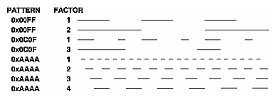
Figure 2-8 : Stippled Lines
One way to think of the stippling is that as the line is being drawn, the pattern is shifted by 1 bit each time a pixel is drawn (or factor pixels are drawn, if factor isn't 1). When a series of connected line segments is drawn between a single glBegin() and glEnd(), the pattern continues to shift as one segment turns into the next. This way, a stippling pattern continues across a series of connected line segments. When glEnd() is executed, the pattern is reset, and - if more lines are drawn before stippling is disabled - the stippling restarts at the beginning of the pattern. If you're drawing lines with GL_LINES, the pattern resets for each independent line.
Example 2-5 illustrates the results of drawing with a couple of different stipple patterns and line widths. It also illustrates what happens if the lines are drawn as a series of individual segments instead of a single connected line strip. The results of running the program appear in Figure 2-9.
Figure 2-9 : Wide Stippled Lines
Example 2-5 : Line Stipple Patterns: lines.c
#include <GL/gl.h>
#include <GL/glut.h>
#define drawOneLine(x1,y1,x2,y2) glBegin(GL_LINES); \
glVertex2f ((x1),(y1)); glVertex2f ((x2),(y2)); glEnd();
void init(void)
{
glClearColor (0.0, 0.0, 0.0, 0.0);
glShadeModel (GL_FLAT);
}
void display(void)
{
int i;
glClear (GL_COLOR_BUFFER_BIT);
/* select white for all lines */
glColor3f (1.0, 1.0, 1.0);
/* in 1st row, 3 lines, each with a different stipple */
glEnable (GL_LINE_STIPPLE);
glLineStipple (1, 0x0101); /* dotted */
drawOneLine (50.0, 125.0, 150.0, 125.0);
glLineStipple (1, 0x00FF); /* dashed */
drawOneLine (150.0, 125.0, 250.0, 125.0);
glLineStipple (1, 0x1C47); /* dash/dot/dash */
drawOneLine (250.0, 125.0, 350.0, 125.0);
/* in 2nd row, 3 wide lines, each with different stipple */
glLineWidth (5.0);
glLineStipple (1, 0x0101); /* dotted */
drawOneLine (50.0, 100.0, 150.0, 100.0);
glLineStipple (1, 0x00FF); /* dashed */
drawOneLine (150.0, 100.0, 250.0, 100.0);
glLineStipple (1, 0x1C47); /* dash/dot/dash */
drawOneLine (250.0, 100.0, 350.0, 100.0);
glLineWidth (1.0);
/* in 3rd row, 6 lines, with dash/dot/dash stipple */
/* as part of a single connected line strip */
glLineStipple (1, 0x1C47); /* dash/dot/dash */
glBegin (GL_LINE_STRIP);
for (i = 0; i < 7; i++)
glVertex2f (50.0 + ((GLfloat) i * 50.0), 75.0);
glEnd ();
/* in 4th row, 6 independent lines with same stipple */
for (i = 0; i < 6; i++) {
drawOneLine (50.0 + ((GLfloat) i * 50.0), 50.0,
50.0 + ((GLfloat)(i+1) * 50.0), 50.0);
}
/* in 5th row, 1 line, with dash/dot/dash stipple */
/* and a stipple repeat factor of 5 */
glLineStipple (5, 0x1C47); /* dash/dot/dash */
drawOneLine (50.0, 25.0, 350.0, 25.0);
glDisable (GL_LINE_STIPPLE);
glFlush ();
}
void reshape (int w, int h)
{
glViewport (0, 0, (GLsizei) w, (GLsizei) h);
glMatrixMode (GL_PROJECTION);
glLoadIdentity ();
gluOrtho2D (0.0, (GLdouble) w, 0.0, (GLdouble) h);
}
int main(int argc, char** argv)
{
glutInit(&argc, argv);
glutInitDisplayMode (GLUT_SINGLE | GLUT_RGB);
glutInitWindowSize (400, 150);
glutInitWindowPosition (100, 100);
glutCreateWindow (argv[0]);
init ();
glutDisplayFunc(display);
glutReshapeFunc(reshape);
glutMainLoop();
return 0;
}
Polygon Details
Polygons are typically drawn by filling in all the pixels enclosed within the boundary, but you can also draw them as outlined polygons or simply as points at the vertices. A filled polygon might be solidly filled or stippled with a certain pattern. Although the exact details are omitted here, filled polygons are drawn in such a way that if adjacent polygons share an edge or vertex, the pixels making up the edge or vertex are drawn exactly once - they're included in only one of the polygons. This is done so that partially transparent polygons don't have their edges drawn twice, which would make those edges appear darker (or brighter, depending on what color you're drawing with). Note that it might result in narrow polygons having no filled pixels in one or more rows or columns of pixels. Antialiasing polygons is more complicated than for points and lines. (See "Antialiasing" in Chapter 6 for details.)
Polygons as Points, Outlines, or Solids
A polygon has two sides - front and back - and might be rendered differently depending on which side is facing the viewer. This allows you to have cutaway views of solid objects in which there is an obvious distinction between the parts that are inside and those that are outside. By default, both front and back faces are drawn in the same way. To change this, or to draw only outlines or vertices, use glPolygonMode().
- void glPolygonMode(GLenum
face, GLenum mode);
Controls the drawing mode for a polygon's front and back faces. The parameter face can be GL_FRONT_AND_BACK, GL_FRONT, or GL_BACK; mode can be GL_POINT, GL_LINE, or GL_FILL to indicate whether the polygon should be drawn as points, outlined, or filled. By default, both the front and back faces are drawn filled.
For example, you can have the front faces filled and the back faces outlined with two calls to this routine:
glPolygonMode(GL_FRONT, GL_FILL);
glPolygonMode(GL_BACK, GL_LINE);
Reversing and Culling Polygon Faces
By convention, polygons whose vertices appear in counterclockwise order on the screen are called front-facing. You can construct the surface of any "reasonable" solid - a mathematician would call such a surface an orientable manifold (spheres, donuts, and teapots are orientable; Klein bottles and Mobius strips aren't) - from polygons of consistent orientation. In other words, you can use all clockwise polygons, or all counterclockwise polygons. (This is essentially the mathematical definition of orientable.)
Suppose you've consistently described a model of an orientable surface but that you happen to have the clockwise orientation on the outside. You can swap what OpenGL considers the back face by using the function glFrontFace(), supplying the desired orientation for front-facing polygons.
- void glFrontFace(GLenum mode);
- Controls how front-facing polygons are determined. By default,
mode is GL_CCW, which corresponds to a counterclockwise orientation of the ordered vertices of a projected polygon in window coordinates. If mode is GL_CW, faces with a clockwise orientation are considered front-facing.
In a completely enclosed surface constructed from opaque polygons with a consistent orientation, none of the back-facing polygons are ever visible - they're always obscured by the front-facing polygons. If you are outside this surface, you might enable culling to discard polygons that OpenGL determines are back-facing. Similarly, if you are inside the object, only back-facing polygons are visible. To instruct OpenGL to discard front- or back-facing polygons, use the command glCullFace() and enable culling with glEnable().
- void glCullFace(GLenum
mode);
Indicates which polygons should be discarded (culled) before they're converted to screen coordinates. The mode is either GL_FRONT, GL_BACK, or GL_FRONT_AND_BACK to indicate front-facing, back-facing, or all polygons. To take effect, culling must be enabled using glEnable() with GL_CULL_FACE; it can be disabled with glDisable() and the same argument.
Advanced
In more technical terms, the decision of whether a face of a polygon is front- or back-facing depends on the sign of the polygon's area computed in window coordinates. One way to compute this area is
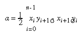
where xi and yi are the x and y window coordinates of the ith vertex of the n-vertex polygon and
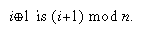
Assuming that GL_CCW has been specified, if a>0, the polygon corresponding to that vertex is considered to be front-facing; otherwise, it's back-facing. If GL_CW is specified and if a<0, then the corresponding polygon is front-facing; otherwise, it's back-facing.
Try This
Modify Example 2-5 by adding some filled polygons. Experiment with different colors. Try different polygon modes. Also enable culling to see its effect.
Stippling Polygons
By default, filled polygons are drawn with a solid pattern. They can also be filled with a 32-bit by 32-bit window-aligned stipple pattern, which you specify with glPolygonStipple().
- void glPolygonStipple(const GLubyte *
mask);
Defines the current stipple pattern for filled polygons. The argument mask is a pointer to a 32 ´
32 bitmap that's interpreted as a mask of 0s and 1s. Where a 1 appears, the corresponding pixel in the polygon is drawn, and where a 0 appears, nothing is drawn. Figure 2-10 shows how a stipple pattern is constructed from the characters in mask. Polygon stippling is enabled and disabled by using glEnable() and glDisable() with GL_POLYGON_STIPPLE as the argument. The interpretation of the mask data is affected by the glPixelStore*() GL_UNPACK* modes. (See "Controlling Pixel-Storage Modes" in Chapter 8.)
In addition to defining the current polygon stippling pattern, you must enable stippling:
glEnable(GL_POLYGON_STIPPLE);
Use glDisable() with the same argument to disable polygon stippling.
Figure 2-11 shows the results of polygons drawn unstippled and then with two different stippling patterns. The program is shown in Example 2-6. The reversal of white to black (from Figure 2-10 to Figure 2-11) occurs because the program draws in white over a black background, using the pattern in Figure 2-10 as a stencil.
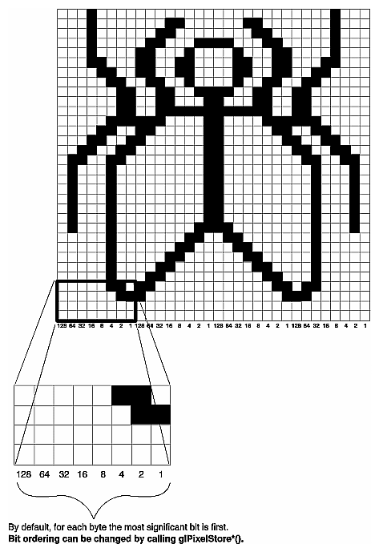
Figure 2-10 : Constructing a Polygon Stipple Pattern
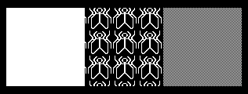
Figure 2-11 : Stippled Polygons
Example 2-6 : Polygon Stipple Patterns: polys.c
#include <GL/gl.h>
#include <GL/glut.h>
void display(void)
{
GLubyte fly[] = {
0x00, 0x00, 0x00, 0x00, 0x00, 0x00, 0x00, 0x00,
0x03, 0x80, 0x01, 0xC0, 0x06, 0xC0, 0x03, 0x60,
0x04, 0x60, 0x06, 0x20, 0x04, 0x30, 0x0C, 0x20,
0x04, 0x18, 0x18, 0x20, 0x04, 0x0C, 0x30, 0x20,
0x04, 0x06, 0x60, 0x20, 0x44, 0x03, 0xC0, 0x22,
0x44, 0x01, 0x80, 0x22, 0x44, 0x01, 0x80, 0x22,
0x44, 0x01, 0x80, 0x22, 0x44, 0x01, 0x80, 0x22,
0x44, 0x01, 0x80, 0x22, 0x44, 0x01, 0x80, 0x22,
0x66, 0x01, 0x80, 0x66, 0x33, 0x01, 0x80, 0xCC,
0x19, 0x81, 0x81, 0x98, 0x0C, 0xC1, 0x83, 0x30,
0x07, 0xe1, 0x87, 0xe0, 0x03, 0x3f, 0xfc, 0xc0,
0x03, 0x31, 0x8c, 0xc0, 0x03, 0x33, 0xcc, 0xc0,
0x06, 0x64, 0x26, 0x60, 0x0c, 0xcc, 0x33, 0x30,
0x18, 0xcc, 0x33, 0x18, 0x10, 0xc4, 0x23, 0x08,
0x10, 0x63, 0xC6, 0x08, 0x10, 0x30, 0x0c, 0x08,
0x10, 0x18, 0x18, 0x08, 0x10, 0x00, 0x00, 0x08};
GLubyte halftone[] = {
0xAA, 0xAA, 0xAA, 0xAA, 0x55, 0x55, 0x55, 0x55,
0xAA, 0xAA, 0xAA, 0xAA, 0x55, 0x55, 0x55, 0x55,
0xAA, 0xAA, 0xAA, 0xAA, 0x55, 0x55, 0x55, 0x55,
0xAA, 0xAA, 0xAA, 0xAA, 0x55, 0x55, 0x55, 0x55,
0xAA, 0xAA, 0xAA, 0xAA, 0x55, 0x55, 0x55, 0x55,
0xAA, 0xAA, 0xAA, 0xAA, 0x55, 0x55, 0x55, 0x55,
0xAA, 0xAA, 0xAA, 0xAA, 0x55, 0x55, 0x55, 0x55,
0xAA, 0xAA, 0xAA, 0xAA, 0x55, 0x55, 0x55, 0x55,
0xAA, 0xAA, 0xAA, 0xAA, 0x55, 0x55, 0x55, 0x55,
0xAA, 0xAA, 0xAA, 0xAA, 0x55, 0x55, 0x55, 0x55,
0xAA, 0xAA, 0xAA, 0xAA, 0x55, 0x55, 0x55, 0x55,
0xAA, 0xAA, 0xAA, 0xAA, 0x55, 0x55, 0x55, 0x55,
0xAA, 0xAA, 0xAA, 0xAA, 0x55, 0x55, 0x55, 0x55,
0xAA, 0xAA, 0xAA, 0xAA, 0x55, 0x55, 0x55, 0x55,
0xAA, 0xAA, 0xAA, 0xAA, 0x55, 0x55, 0x55, 0x55,
0xAA, 0xAA, 0xAA, 0xAA, 0x55, 0x55, 0x55, 0x55};
glClear (GL_COLOR_BUFFER_BIT);
glColor3f (1.0, 1.0, 1.0);
/* draw one solid, unstippled rectangle, */
/* then two stippled rectangles */
glRectf (25.0, 25.0, 125.0, 125.0);
glEnable (GL_POLYGON_STIPPLE);
glPolygonStipple (fly);
glRectf (125.0, 25.0, 225.0, 125.0);
glPolygonStipple (halftone);
glRectf (225.0, 25.0, 325.0, 125.0);
glDisable (GL_POLYGON_STIPPLE);
glFlush ();
}
void init (void)
{
glClearColor (0.0, 0.0, 0.0, 0.0);
glShadeModel (GL_FLAT);
}
void reshape (int w, int h)
{
glViewport (0, 0, (GLsizei) w, (GLsizei) h);
glMatrixMode (GL_PROJECTION);
glLoadIdentity ();
gluOrtho2D (0.0, (GLdouble) w, 0.0, (GLdouble) h);
}
int main(int argc, char** argv)
{
glutInit(&argc, argv);
glutInitDisplayMode (GLUT_SINGLE | GLUT_RGB);
glutInitWindowSize (350, 150);
glutCreateWindow (argv[0]);
init ();
glutDisplayFunc(display);
glutReshapeFunc(reshape);
glutMainLoop();
return 0;
}
You might want to use display lists to store polygon stipple patterns to maximize efficiency. (See "Display-List Design Philosophy" in Chapter 7.)
Marking Polygon Boundary Edges
Advanced
OpenGL can render only convex polygons, but many nonconvex polygons arise in practice. To draw these nonconvex polygons, you typically subdivide them into convex polygons - usually triangles, as shown in Figure 2-12 - and then draw the triangles. Unfortunately, if you decompose a general polygon into triangles and draw the triangles, you can't really use glPolygonMode() to draw the polygon's outline, since you get all the triangle outlines inside it. To solve this problem, you can tell OpenGL whether a particular vertex precedes a boundary edge; OpenGL keeps track of this information by passing along with each vertex a bit indicating whether that vertex is followed by a boundary edge. Then, when a polygon is drawn in GL_LINE mode, the nonboundary edges aren't drawn. In Figure 2-12, the dashed lines represent added edges.
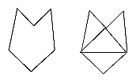
Figure 2-12 : Subdividing a Nonconvex Polygon
By default, all vertices are marked as preceding a boundary edge, but you can manually control the setting of the edge flag with the command glEdgeFlag*(). This command is used between glBegin() and glEnd() pairs, and it affects all the vertices specified after it until the next glEdgeFlag() call is made. It applies only to vertices specified for polygons, triangles, and quads, not to those specified for strips of triangles or quads.
- void glEdgeFlag(GLboolean
flag);
void glEdgeFlagv(const GLboolean *flag);
Indicates whether a vertex should be considered as initializing a boundary edge of a polygon. If flag is GL_TRUE, the edge flag is set to TRUE (the default), and any vertices created are considered to precede boundary edges until this function is called again with flag being GL_FALSE.
As an example, Example 2-7 draws the outline shown in Figure 2-13.
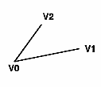
Figure 2-13 : Outlined Polygon Drawn Using Edge Flags
Example 2-7 : Marking Polygon Boundary Edges
glPolygonMode(GL_FRONT_AND_BACK, GL_LINE);
glBegin(GL_POLYGON);
glEdgeFlag(GL_TRUE);
glVertex3fv(V0);
glEdgeFlag(GL_FALSE);
glVertex3fv(V1);
glEdgeFlag(GL_TRUE);
glVertex3fv(V2);
glEnd();
Normal Vectors
A normal vector (or normal, for short) is a vector that points in a direction that's perpendicular to a surface. For a flat surface, one perpendicular direction is the same for every point on the surface, but for a general curved surface, the normal direction might be different at each point on the surface. With OpenGL, you can specify a normal for each polygon or for each vertex. Vertices of the same polygon might share the same normal (for a flat surface) or have different normals (for a curved surface). But you can't assign normals anywhere other than at the vertices.
An object's normal vectors define the orientation of its surface in space - in particular, its orientation relative to light sources. These vectors are used by OpenGL to determine how much light the object receives at its vertices. Lighting - a large topic by itself - is the subject of Chapter 5, and you might want to review the following information after you've read that chapter. Normal vectors are discussed briefly here because you define normal vectors for an object at the same time you define the object's geometry.
You use glNormal*() to set the current normal to the value of the argument passed in. Subsequent calls to glVertex*() cause the specified vertices to be assigned the current normal. Often, each vertex has a different normal, which necessitates a series of alternating calls, as in Example 2-8.
Example 2-8 : Surface Normals at Vertices
glBegin (GL_POLYGON);
glNormal3fv(n0);
glVertex3fv(v0);
glNormal3fv(n1);
glVertex3fv(v1);
glNormal3fv(n2);
glVertex3fv(v2);
glNormal3fv(n3);
glVertex3fv(v3);
glEnd();
- void glNormal3{bsidf}(TYPEnx, TYPEny, TYPEnz);
void glNormal3{bsidf}v(const TYPE *v);
Sets the current normal vector as specified by the arguments. The nonvector version (without the v) takes three arguments, which specify an (nx, ny, nz) vector that's taken to be the normal. Alternatively, you can use the vector version of this function (with the v) and supply a single array of three elements to specify the desired normal. The b, s, and i versions scale their parameter values linearly to the range [-1.0,1.0].
There's no magic to finding the normals for an object - most likely, you have to perform some calculations that might include taking derivatives - but there are several techniques and tricks you can use to achieve certain effects. Appendix E explains how to find normal vectors for surfaces. If you already know how to do this, if you can count on always being supplied with normal vectors, or if you don't want to use the lighting facility provided by OpenGL lighting facility, you don't need to read this appendix.
Note that at a given point on a surface, two vectors are perpendicular to the surface, and they point in opposite directions. By convention, the normal is the one that points to the outside of the surface being modeled. (If you get inside and outside reversed in your model, just change every normal vector from (x, y, z) to (- &xgr; , -y, -z)).
Also, keep in mind that since normal vectors indicate direction only, their length is mostly irrelevant. You can specify normals of any length, but eventually they have to be converted to having a length of 1 before lighting calculations are performed. (A vector that has a length of 1 is said to be of unit length, or normalized.) In general, you should supply normalized normal vectors. To make a normal vector of unit length, divide each of its x, y, z components by the length of the normal:
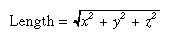
Normal vectors remain normalized as long as your model transformations include only rotations and translations. (See Chapter 3 for a discussion of transformations.) If you perform irregular transformations (such as scaling or multiplying by a shear matrix), or if you specify nonunit-length normals, then you should have OpenGL automatically normalize your normal vectors after the transformations. To do this, call glEnable() with GL_NORMALIZE as its argument. By default, automatic normalization is disabled. Note that automatic normalization typically requires additional calculations that might reduce the performance of your application.
Vertex Arrays
You may have noticed that OpenGL requires many function calls to render geometric primitives. Drawing a 20-sided polygon requires 22 function calls: one call to glBegin(), one call for each of the vertices, and a final call to glEnd(). In the two previous code examples, additional information (polygon boundary edge flags or surface normals) added function calls for each vertex. This can quickly double or triple the number of function calls required for one geometric object. For some systems, function calls have a great deal of overhead and can hinder performance.
An additional problem is the redundant processing of vertices that are shared between adjacent polygons. For example, the cube in Figure 2-14 has six faces and eight shared vertices. Unfortunately, using the standard method of describing this object, each vertex would have to be specified three times: once for every face that uses it. So 24 vertices would be processed, even though eight would be enough.
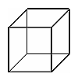
Figure 2-14 : Six Sides; Eight Shared Vertices
OpenGL has vertex array routines that allow you to specify a lot of vertex-related data with just a few arrays and to access that data with equally few function calls. Using vertex array routines, all 20 vertices in a 20-sided polygon could be put into one array and called with one function. If each vertex also had a surface normal, all 20 surface normals could be put into another array and also called with one function.
Arranging data in vertex arrays may increase the performance of your application. Using vertex arrays reduces the number of function calls, which improves performance. Also, using vertex arrays may allow non-redundant processing of shared vertices. (Vertex sharing is not supported on all implementations of OpenGL.)
Note: Vertex arrays are standard in version 1.1 of OpenGL but were not part of the OpenGL 1.0 specification. With OpenGL 1.0, some vendors have implemented vertex arrays as an extension.
There are three steps to using vertex arrays to render geometry.
Activate (enable) up to six arrays, each to store a different type of data: vertex coordinates, RGBA colors, color indices, surface normals, texture coordinates, or polygon edge flags.
Put data into the array or arrays. The arrays are accessed by the addresses of (that is, pointers to) their memory locations. In the client-server model, this data is stored in the client's address space.
Draw geometry with the data. OpenGL obtains the data from all activated arrays by dereferencing the pointers. In the client-server model, the data is transferred to the server's address space. There are three ways to do this:
Accessing individual array elements (randomly hopping around)
Creating a list of individual array elements (methodically hopping around)
Processing sequential array elements
The dereferencing method you choose may depend upon the type of problem you encounter.
Interleaved vertex array data is another common method of organization. Instead of having up to six different arrays, each maintaining a different type of data (color, surface normal, coordinate, and so on), you might have the different types of data mixed into a single array. (See "Interleaved Arrays" for two methods of solving this.)
Step 1: Enabling Arrays
The first step is to call glEnableClientState() with an enumerated parameter, which activates the chosen array. In theory, you may need to call this up to six times to activate the six available arrays. In practice, you'll probably activate only between one to four arrays. For example, it is unlikely that you would activate both GL_COLOR_ARRAY and GL_INDEX_ARRAY, since your program's display mode supports either RGBA mode or color-index mode, but probably not both simultaneously.
- void glEnableClientState(GLenum
array)
Specifies the array to enable. Symbolic constants GL_VERTEX_ARRAY, GL_COLOR_ARRAY, GL_INDEX_ARRAY, GL_NORMAL_ARRAY, GL_TEXTURE_COORD_ARRAY, and GL_EDGE_FLAG_ARRAY are acceptable parameters.
If you use lighting, you may want to define a surface normal for every vertex. (See "Normal Vectors.") To use vertex arrays for that case, you activate both the surface normal and vertex coordinate arrays:
glEnableClientState(GL_NORMAL_ARRAY);
glEnableClientState(GL_VERTEX_ARRAY);
Suppose that you want to turn off lighting at some point and just draw the geometry using a single color. You want to call glDisable() to turn off lighting states (see Chapter 5). Now that lighting has been deactivated, you also want to stop changing the values of the surface normal state, which is wasted effort. To do that, you call
glDisableClientState(GL_NORMAL_ARRAY);
- void glDisableClientState(GLenum
array);
Specifies the array to disable. Accepts the same symbolic constants as glEnableClientState().
You might be asking yourself why the architects of OpenGL created these new (and long!) command names, gl*ClientState(). Why can't you just call glEnable() and glDisable()? One reason is that glEnable() and glDisable() can be stored in a display list, but the specification of vertex arrays cannot, because the data remains on the client's side.
Step 2: Specifying Data for the Arrays
There is a straightforward way by which a single command specifies a single array in the client space. There are six different routines to specify arrays - one routine for each kind of array. There is also a command that can specify several client-space arrays at once, all originating from a single interleaved array.
- void glVertexPointer(GLint
size, GLenum type, GLsizei stride,
const GLvoid *pointer);
Specifies where spatial coordinate data can be accessed. pointer is the memory address of the first coordinate of the first vertex in the array. type specifies the data type (GL_SHORT, GL_INT, GL_FLOAT, or GL_DOUBLE) of each coordinate in the array. size is the number of coordinates per vertex, which must be 2, 3, or 4. stride is the byte offset between consecutive vertexes. If stride is 0, the vertices are understood to be tightly packed in the array.
To access the other five arrays, there are five similar routines:
- void glColorPointer(GLint
size, GLenum type, GLsizei stride,
const GLvoid *pointer);
void glIndexPointer(GLenum type, GLsizei stride, const GLvoid *pointer);
void glNormalPointer(GLenum type, GLsizei stride,
const GLvoid *pointer);
void glTexCoordPointer(GLint size, GLenum type, GLsizei stride,
const GLvoid *pointer);
void glEdgeFlagPointer(GLsizei stride, const GLvoid *pointer);
The main differences among the routines are whether size and type are unique or must be specified. For example, a surface normal always has three components, so it is redundant to specify its size. An edge flag is always a single Boolean, so neither size nor type needs to be mentioned. Table 2-4 displays legal values for size and data types.
Table 2-4 : Vertex Array Sizes (Values per Vertex) and Data Types(continued)
|
Command |
Sizes |
Values for type Argument |
|
glVertexPointer |
2, 3, 4 |
GL_SHORT, GL_INT, GL_FLOAT, GL_DOUBLE |
|
glNormalPointer |
3 |
GL_BYTE, GL_SHORT, GL_INT, GL_FLOAT, GL_DOUBLE |
|
glColorPointer |
3, 4 |
GL_BYTE, GL_UNSIGNED_BYTE, GL_SHORT, GL_UNSIGNED_SHORT, GL_INT, GL_UNSIGNED_INT, GL_FLOAT, GL_DOUBLE |
|
glIndexPointer |
1 |
GL_UNSIGNED_BYTE, GL_SHORT, GL_INT, GL_FLOAT, GL_DOUBLE |
|
glTexCoordPointer |
1, 2, 3, 4 |
GL_SHORT, GL_INT, GL_FLOAT, GL_DOUBLE |
|
glEdgeFlagPointer |
1 |
no type argument (type of data must be GLboolean) |
Example 2-9 uses vertex arrays for both RGBA colors and vertex coordinates. RGB floating-point values and their corresponding (x, y) integer coordinates are loaded into the GL_COLOR_ARRAY and GL_VERTEX_ARRAY.
Example 2-9 : Enabling and Loading Vertex Arrays: varray.c
static GLint vertices[] = {25, 25,
100, 325,
175, 25,
175, 325,
250, 25,
325, 325};
static GLfloat colors[] = {1.0, 0.2, 0.2,
0.2, 0.2, 1.0,
0.8, 1.0, 0.2,
0.75, 0.75, 0.75,
0.35, 0.35, 0.35,
0.5, 0.5, 0.5};
glEnableClientState (GL_COLOR_ARRAY);
glEnableClientState (GL_VERTEX_ARRAY);
glColorPointer (3, GL_FLOAT, 0, colors);
glVertexPointer (2, GL_INT, 0, vertices);
Stride
With a stride of zero, each type of vertex array (RGB color, color index, vertex coordinate, and so on) must be tightly packed. The data in the array must be homogeneous; that is, the data must be all RGB color values, all vertex coordinates, or all some other data similar in some fashion.
Using a stride of other than zero can be useful, especially when dealing with interleaved arrays. In the following array of GLfloats, there are six vertices. For each vertex, there are three RGB color values, which alternate with the (x, y, z) vertex coordinates.
static GLfloat intertwined[] =
{1.0, 0.2, 1.0, 100.0, 100.0, 0.0,
1.0, 0.2, 0.2, 0.0, 200.0, 0.0,
1.0, 1.0, 0.2, 100.0, 300.0, 0.0,
0.2, 1.0, 0.2, 200.0, 300.0, 0.0,
0.2, 1.0, 1.0, 300.0, 200.0, 0.0,
0.2, 0.2, 1.0, 200.0, 100.0, 0.0};
Stride allows a vertex array to access its desired data at regular intervals in the array. For example, to reference only the color values in the intertwined array, the following call starts from the beginning of the array (which could also be passed as &intertwined[0]) and jumps ahead 6 * sizeof(GLfloat) bytes, which is the size of both the color and vertex coordinate values. This jump is enough to get to the beginning of the data for the next vertex.
glColorPointer (3, GL_FLOAT, 6 * sizeof(GLfloat), intertwined);
For the vertex coordinate pointer, you need to start from further in the array, at the fourth element of intertwined (remember that C programmers start counting at zero).
glVertexPointer(3, GL_FLOAT,6*sizeof(GLfloat), &intertwined[3]);
Step 3: Dereferencing and Rendering
Until the contents of the vertex arrays are dereferenced, the arrays remain on the client side, and their contents are easily changed. In Step 3, contents of the arrays are obtained, sent down to the server, and then sent down the graphics processing pipeline for rendering.
There are three ways to obtain data: from a single array element (indexed location), from a sequence of array elements, and from an ordered list of array elements.
Dereference a Single Array Element
- void glArrayElement(GLint
ith)
Obtains the data of one (the ith) vertex for all currently enabled arrays. For the vertex coordinate array, the corresponding command would be glVertex[size][type]v(), where size is one of [2,3,4], and type is one of [s,i,f,d] for GLshort, GLint, GLfloat, and GLdouble respectively. Both size and type were defined by glVertexPointer(). For other enabled arrays, glArrayElement() calls glEdgeFlagv(), glTexCoord[size][type]v(), glColor[size][type]v(), glIndex[type]v(), and glNormal[type]v(). If the vertex coordinate array is enabled, the glVertex*v() routine is executed last, after the execution (if enabled) of up to five corresponding array values.
glArrayElement() is usually called between glBegin() and glEnd(). (If called outside, glArrayElement() sets the current state for all enabled arrays, except for vertex, which has no current state.) In Example 2-10, a triangle is drawn using the third, fourth, and sixth vertices from enabled vertex arrays (again, remember that C programmers begin counting array locations with zero).
Example 2-10 : Using glArrayElement() to Define Colors and Vertices
glEnableClientState (GL_COLOR_ARRAY);
glEnableClientState (GL_VERTEX_ARRAY);
glColorPointer (3, GL_FLOAT, 0, colors);
glVertexPointer (2, GL_INT, 0, vertices);
glBegin(GL_TRIANGLES);
glArrayElement (2);
glArrayElement (3);
glArrayElement (5);
glEnd();
When executed, the latter five lines of code has the same effect as
glBegin(GL_TRIANGLES);
glColor3fv(colors+(2*3*sizeof(GLfloat));
glVertex3fv(vertices+(2*2*sizeof(GLint));
glColor3fv(colors+(3*3*sizeof(GLfloat));
glVertex3fv(vertices+(3*2*sizeof(GLint));
glColor3fv(colors+(5*3*sizeof(GLfloat));
glVertex3fv(vertices+(5*2*sizeof(GLint));
glEnd();
Since glArrayElement() is only a single function call per vertex, it may reduce the number of function calls, which increases overall performance.
Be warned that if the contents of the array are changed between glBegin() and glEnd(), there is no guarantee that you will receive original data or changed data for your requested element. To be safe, don't change the contents of any array element which might be accessed until the primitive is completed.
Dereference a List of Array Elements
glArrayElement() is good for randomly "hopping around" your data arrays. A similar routine, glDrawElements(), is good for hopping around your data arrays in a more orderly manner.
- void glDrawElements(GLenum
mode, GLsizei count, GLenum type,
void *indices);
Defines a sequence of geometric primitives using count number of elements, whose indices are stored in the array indices. type must be one of GL_UNSIGNED_BYTE, GL_UNSIGNED_SHORT, or GL_UNSIGNED_INT, indicating the data type of the indices array. mode specifies what kind of primitives are constructed and is one of the same values that is accepted by glBegin(); for example, GL_POLYGON, GL_LINE_LOOP, GL_LINES, GL_POINTS, and so on.
The effect of glDrawElements() is almost the same as this command sequence:
int i;
glBegin (mode);
for (i = 0; i < count; i++)
glArrayElement(indices[i]);
glEnd();
glDrawElements() additionally checks to make sure mode, count, and type are valid. Also, unlike the preceding sequence, executing glDrawElements() leaves several states indeterminate. After execution of glDrawElements(), current RGB color, color index, normal coordinates, texture coordinates, and edge flag are indeterminate if the corresponding array has been enabled.
With glDrawElements(), the vertices for each face of the cube can be placed in an array of indices. Example 2-11 shows two ways to use glDrawElements() to render the cube. Figure 2-15 shows the numbering of the vertices used in Example 2-11.
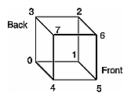
Figure 2-15 : Cube with Numbered Vertices
Example 2-11 : Two Ways to Use glDrawElements()
static GLubyte frontIndices = {4, 5, 6, 7};
static GLubyte rightIndices = {1, 2, 6, 5};
static GLubyte bottomIndices = {0, 1, 5, 4};
static GLubyte backIndices = {0, 3, 2, 1};
static GLubyte leftIndices = {0, 4, 7, 3};
static GLubyte topIndices = {2, 3, 7, 6};
glDrawElements(GL_QUADS, 4, GL_UNSIGNED_BYTE, frontIndices);
glDrawElements(GL_QUADS, 4, GL_UNSIGNED_BYTE, rightIndices);
glDrawElements(GL_QUADS, 4, GL_UNSIGNED_BYTE, bottomIndices);
glDrawElements(GL_QUADS, 4, GL_UNSIGNED_BYTE, backIndices);
glDrawElements(GL_QUADS, 4, GL_UNSIGNED_BYTE, leftIndices);
glDrawElements(GL_QUADS, 4, GL_UNSIGNED_BYTE, topIndices);
Or better still, crunch all the indices together:
static GLubyte allIndices = {4, 5, 6, 7, 1, 2, 6, 5,
0, 1, 5, 4, 0, 3, 2, 1,
0, 4, 7, 3, 2, 3, 7, 6};
glDrawElements(GL_QUADS, 24, GL_UNSIGNED_BYTE, allIndices);
Note: It is an error to encapsulate glDrawElements() between a glBegin()/glEnd() pair.
With both glArrayElement() and glDrawElements(), it is also possible that your OpenGL implementation caches recently processed vertices, allowing your application to "share" or "reuse" vertices. Take the aforementioned cube, for example, which has six faces (polygons) but only eight vertices. Each vertex is used by exactly three faces. Without glArrayElement() or glDrawElements(), rendering all six faces would require processing twenty-four vertices, even though sixteen vertices would be redundant. Your implementation of OpenGL may be able to minimize redundancy and process as few as eight vertices. (Reuse of vertices may be limited to all vertices within a single glDrawElements() call or, for glArrayElement(), within one glBegin()/glEnd() pair.)
Dereference a Sequence of Array Elements
While glArrayElement() and glDrawElements() "hop around" your data arrays, glDrawArrays() plows straight through them.
- void glDrawArrays(GLenum
mode, GLint first, GLsizei count);
Constructs a sequence of geometric primitives using array elements starting at first and ending at first+count-1 of each enabled array. mode specifies what kinds of primitives are constructed and is one of the same values accepted by glBegin(); for example, GL_POLYGON, GL_LINE_LOOP, GL_LINES, GL_POINTS, and so on.
The effect of glDrawArrays() is almost the same as this command sequence:
int i;
glBegin (mode);
for (i = 0; i < count; i++)
glArrayElement(first + i);
glEnd();
As is the case with glDrawElements(), glDrawArrays() also performs error checking on its parameter values and leaves the current RGB color, color index, normal coordinates, texture coordinates, and edge flag with indeterminate values if the corresponding array has been enabled.
Try This
- Change the icosahedron drawing routine in Example 2-13 to use vertex arrays.
Interleaved Arrays
Advanced
Earlier in this chapter (in "Stride"), the special case of interleaved arrays was examined. In that section, the array intertwined, which interleaves RGB color and 3D vertex coordinates, was accessed by calls to glColorPointer() and glVertexPointer(). Careful use of stride helped properly specify the arrays.
static GLfloat intertwined[] =
{1.0, 0.2, 1.0, 100.0, 100.0, 0.0,
1.0, 0.2, 0.2, 0.0, 200.0, 0.0,
1.0, 1.0, 0.2, 100.0, 300.0, 0.0,
0.2, 1.0, 0.2, 200.0, 300.0, 0.0,
0.2, 1.0, 1.0, 300.0, 200.0, 0.0,
0.2, 0.2, 1.0, 200.0, 100.0, 0.0};
There is also a behemoth routine, glInterleavedArrays(), that can specify several vertex arrays at once. glInterleavedArrays() also enables and disables the appropriate arrays (so it combines both Steps 1 and 2). The array intertwined exactly fits one of the fourteen data interleaving configurations supported by glInterleavedArrays(). So to specify the contents of the array intertwined into the RGB color and vertex arrays and enable both arrays, call
glInterleavedArrays (GL_C3F_V3F, 0, intertwined);
This call to glInterleavedArrays() enables the GL_COLOR_ARRAY and GL_VERTEX_ARRAY arrays. It disables the GL_INDEX_ARRAY, GL_TEXTURE_COORD_ARRAY, GL_NORMAL_ARRAY, and GL_EDGE_FLAG_ARRAY.
This call also has the same effect as calling glColorPointer() and glVertexPointer() to specify the values for six vertices into each array. Now you are ready for Step 3: Calling glArrayElement(), glDrawElements(), or glDrawArrays() to dereference array elements.
- void glInterleavedArrays(GLenum
format, GLsizei stride, void *pointer)
Initializes all six arrays, disabling arrays that are not specified in format, and enabling the arrays that are specified. format is one of 14 symbolic constants, which represent 14 data configurations; Table 2-5 displays format values. stride specifies the byte offset between consecutive vertexes. If stride is 0, the vertexes are understood to be tightly packed in the array. pointer is the memory address of the first coordinate of the first vertex in the array.
Note that glInterleavedArrays() does not support edge flags.
The mechanics of glInterleavedArrays() are intricate and require reference to Example 2-12 and Table 2-5. In that example and table, you'll see et, ec, and en, which are the boolean values for the enabled or disabled texture coordinate, color, and normal arrays, and you'll see st, sc, and sv, which are the sizes (number of components) for the texture coordinate, color, and vertex arrays. tc is the data type for RGBA color, which is the only array that can have non-float interleaved values. pc, pn, and pv are the calculated strides for jumping over individual color, normal, and vertex values, and s is the stride (if one is not specified by the user) to jump from one array element to the next.
The effect of glInterleavedArrays() is the same as calling the command sequence in Example 2-12 with many values defined in Table 2-5. All pointer arithmetic is performed in units of sizeof(GL_UNSIGNED_BYTE).
Example 2-12 : Effect of glInterleavedArrays(format, stride, pointer)
int str;
/* set et, ec, en, st, sc, sv, tc, pc, pn, pv, and s
* as a function of Table 2-5 and the value of format
*/
str = stride;
if (str == 0)
str = s;
glDisableClientState(GL_EDGE_FLAG_ARRAY);
glDisableClientState(GL_INDEX_ARRAY);
if (et) {
glEnableClientState(GL_TEXTURE_COORD_ARRAY);
glTexCoordPointer(st, GL_FLOAT, str, pointer);
}
else
glDisableClientState(GL_TEXTURE_COORD_ARRAY);
if (ec) {
glEnableClientState(GL_COLOR_ARRAY);
glColorPointer(sc, tc, str, pointer+pc);
}
else
glDisableClientState(GL_COLOR_ARRAY);
if (en) {
glEnableClientState(GL_NORMAL_ARRAY);
glNormalPointer(GL_FLOAT, str, pointer+pn);
}
else
glDisableClientState(GL_NORMAL_ARRAY);
glEnableClientState(GL_VERTEX_ARRAY);
glVertexPointer(sv, GL_FLOAT, str, pointer+pv);
In Table 2-5, T and F are True and False. f is sizeof(GL_FLOAT). c is 4 times sizeof(GL_UNSIGNED_BYTE), rounded up to the nearest multiple of f.
Table 2-5 : (continued) Variables that Direct glInterleavedArrays()
|
format |
et |
ec |
en |
st |
sc |
sv |
tc |
pc |
pn |
pv |
s |
|
GL_V2F |
F |
F |
F |
|
|
2 |
|
|
|
0 |
2f |
|
GL_V3F |
F |
F |
F |
|
|
3 |
|
|
|
0 |
3f |
|
GL_C4UB_V2F |
F |
T |
F |
|
4 |
2 |
GL_UNSIGNED_BYTE |
0 |
|
c |
c+2f |
|
GL_C4UB_V3F |
F |
T |
F |
|
4 |
3 |
GL_UNSIGNED_BYTE |
0 |
|
c |
c+3f |
|
GL_C3F_V3F |
F |
T |
F |
|
3 |
3 |
GL_FLOAT |
0 |
|
3f |
6f |
|
GL_N3F_V3F |
F |
F |
T |
|
|
3 |
|
|
0 |
3f |
6f |
|
GL_C4F_N3F_V3F |
F |
T |
T |
|
4 |
3 |
GL_FLOAT |
0 |
4f |
7f |
10f |
|
GL_T2F_V3F |
T |
F |
F |
2 |
|
3 |
|
|
|
2f |
5f |
|
GL_T4F_V4F |
T |
F |
F |
4 |
|
4 |
|
|
|
4f |
8f |
|
GL_T2F_C4UB_V3F |
T |
T |
F |
2 |
4 |
3 |
GL_UNSIGNED_BYTE |
2f |
|
c+2f |
c+5f |
|
GL_T2F_C3F_V3F |
T |
T |
F |
2 |
3 |
3 |
GL_FLOAT |
2f |
|
5f |
8f |
|
GL_T2F_N3F_V3F |
T |
F |
T |
2 |
|
3 |
|
|
2f |
5f |
8f |
|
GL_T2F_C4F_N3F_V3F |
T |
T |
T |
2 |
4 |
3 |
GL_FLOAT |
2f |
6f |
9f |
12f |
|
GL_T4F_C4F_N3F_V4F |
T |
T |
T |
4 |
4 |
4 |
GL_FLOAT |
4f |
8f |
11f |
15f |
Start by learning the simpler formats, GL_V2F, GL_V3F, and GL_C3F_V3F. If you use any of the formats with C4UB, you may have to use a struct data type or do some delicate type casting and pointer math to pack four unsigned bytes into a single 32-bit word.
For some OpenGL implementations, use of interleaved arrays may increase application performance. With an interleaved array, the exact layout of your data is known. You know your data is tightly packed and may be accessed in one chunk. If interleaved arrays are not used, the stride and size information has to be examined to detect whether data is tightly packed.
Note: glInterleavedArrays() only enables and disables vertex arrays and specifies values for the vertex-array data. It does not render anything. You must still complete Step 3 and call glArrayElement(), glDrawElements(), or glDrawArrays() to dereference the pointers and render graphics.
Attribute Groups
In "Basic State Management," you saw how to set or query an individual state or state variable. Well, you can also save and restore the values of a collection of related state variables with a single command.
OpenGL groups related state variables into an attribute group. For example, the GL_LINE_BIT attribute consists of five state variables: the line width, the GL_LINE_STIPPLE enable status, the line stipple pattern, the line stipple repeat counter, and the GL_LINE_SMOOTH enable status. (See "Antialiasing" in Chapter 6.) With the commands glPushAttrib() and glPopAttrib(), you can save and restore all five state variables, all at once.
Some state variables are in more than one attribute group. For example, the state variable, GL_CULL_FACE, is part of both the polygon and the enable attribute groups.
In OpenGL Version 1.1, there are now two different attribute stacks. In addition to the original attribute stack (which saves the values of server state variables), there is also a client attribute stack, accessible by the commands glPushClientAttrib() and glPopClientAttrib().
In general, it's faster to use these commands than to get, save, and restore the values yourself. Some values might be maintained in the hardware, and getting them might be expensive. Also, if you're operating on a remote client, all the attribute data has to be transferred across the network connection and back as it is obtained, saved, and restored. However, your OpenGL implementation keeps the attribute stack on the server, avoiding unnecessary network delays.
There are about twenty different attribute groups, which can be saved and restored by glPushAttrib() and glPopAttrib(). There are two client attribute groups, which can be saved and restored by glPushClientAttrib() and glPopClientAttrib(). For both server and client, the attributes are stored on a stack, which has a depth of at least 16 saved attribute groups. (The actual stack depths for your implementation can be obtained using GL_MAX_ATTRIB_STACK_DEPTH and GL_MAX_CLIENT_ATTRIB_STACK_DEPTH with glGetIntegerv().) Pushing a full stack or popping an empty one generates an error.
(See the tables in Appendix B to find out exactly which attributes are saved for particular mask values; that is, which attributes are in a particular attribute group.)
- void glPushAttrib(GLbitfield
mask);
void glPopAttrib(void);
glPushAttrib() saves all the attributes indicated by bits in mask by pushing them onto the attribute stack. glPopAttrib() restores the values of those state variables that were saved with the last glPushAttrib(). Table 2-7 lists the possible mask bits that can be logically ORed together to save any combination of attributes. Each bit corresponds to a collection of individual state variables. For example, GL_LIGHTING_BIT refers to all the state variables related to lighting, which include the current material color, the ambient, diffuse, specular, and emitted light, a list of the lights that are enabled, and the directions of the spotlights. When glPopAttrib() is called, all those variables are restored.
The special mask, GL_ALL_ATTRIB_BITS, is used to save and restore all the state variables in all the attribute groups.
Table 2-6 : (continued) Attribute Groups
|
Mask Bit |
Attribute Group |
|
GL_ACCUM_BUFFER_BIT |
accum-buffer |
|
GL_ALL_ATTRIB_BITS |
-- |
|
GL_COLOR_BUFFER_BIT |
color-buffer |
|
GL_CURRENT_BIT |
current |
|
GL_DEPTH_BUFFER_BIT |
depth-buffer |
|
GL_ENABLE_BIT |
enable |
|
GL_EVAL_BIT |
eval |
|
GL_FOG_BIT |
fog |
|
GL_HINT_BIT |
hint |
|
GL_LIGHTING_BIT |
lighting |
|
GL_LINE_BIT |
line |
|
GL_LIST_BIT |
list |
|
GL_PIXEL_MODE_BIT |
pixel |
|
GL_POINT_BIT |
point |
|
GL_POLYGON_BIT |
polygon |
|
GL_POLYGON_STIPPLE_BIT |
polygon-stipple |
|
GL_SCISSOR_BIT |
scissor |
|
GL_STENCIL_BUFFER_BIT |
stencil-buffer |
|
GL_TEXTURE_BIT |
texture |
|
GL_TRANSFORM_BIT |
transform |
|
GL_VIEWPORT_BIT |
viewport |
- void glPushClientAttrib(GLbitfield
mask);
void glPopClientAttrib(void);
glPushClientAttrib() saves all the attributes indicated by bits in mask by pushing them onto the client attribute stack. glPopClientAttrib() restores the values of those state variables that were saved with the last glPushClientAttrib(). Table 2-7 lists the possible mask bits that can be logically ORed together to save any combination of client attributes.
There are two client attribute groups, feedback and select, that cannot be saved or restored with the stack mechanism.
Table 2-7 : Client Attribute Groups
|
Mask Bit |
Attribute Group |
|
GL_CLIENT_PIXEL_STORE_BIT |
pixel-store |
|
GL_CLIENT_VERTEX_ARRAY_BIT |
vertex-array |
|
GL_ALL_CLIENT_ATTRIB_BITS |
-- |
|
can't be pushed or popped |
feedback |
|
can't be pushed or popped |
select |
Some Hints for Building Polygonal Models of Surfaces
Following are some techniques that you might want to use as you build polygonal approximations of surfaces. You might want to review this section after you've read Chapter 5 on lighting and Chapter 7 on display lists. The lighting conditions affect how models look once they're drawn, and some of the following techniques are much more efficient when used in conjunction with display lists. As you read these techniques, keep in mind that when lighting calculations are enabled, normal vectors must be specified to get proper results.
Constructing polygonal approximations to surfaces is an art, and there is no substitute for experience. This section, however, lists a few pointers that might make it a bit easier to get started.
- Keep polygon orientations consistent. Make sure that when viewed from the outside, all the polygons on the surface are oriented in the same direction (all clockwise or all counterclockwise). Consistent orientation is important for polygon culling and two-sided lighting. Try to get this right the first time, since it's excruciatingly painful to fix the problem later. (If you use glScale*() to reflect geometry around some axis of symmetry, you might change the orientation with glFrontFace() to keep the orientations consistent.)
- When you subdivide a surface, watch out for any nontriangular polygons. The three vertices of a triangle are guaranteed to lie on a plane; any polygon with four or more vertices might not. Nonplanar polygons can be viewed from some orientation such that the edges cross each other, and OpenGL might not render such polygons correctly.
- There's always a trade-off between the display speed and the quality of the image. If you subdivide a surface into a small number of polygons, it renders quickly but might have a jagged appearance; if you subdivide it into millions of tiny polygons, it probably looks good but might take a long time to render. Ideally, you can provide a parameter to the subdivision routines that indicates how fine a subdivision you want, and if the object is farther from the eye, you can use a coarser subdivision. Also, when you subdivide, use large polygons where the surface is relatively flat, and small polygons in regions of high curvature.
- For high-quality images, it's a good idea to subdivide more on the silhouette edges than in the interior. If the surface is to be rotated relative to the eye, this is tougher to do, since the silhouette edges keep moving. Silhouette edges occur where the normal vectors are perpendicular to the vector from the surface to the viewpoint - that is, when their vector dot product is zero. Your subdivision algorithm might choose to subdivide more if this dot product is near zero.
- Try to avoid T-intersections in your models (see Figure 2-16). As shown, there's no guarantee that the line segments AB and BC lie on exactly the same pixels as the segment AC. Sometimes they do, and sometimes they don't, depending on the transformations and orientation. This can cause cracks to appear intermittently in the surface.
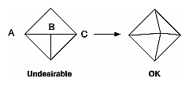
Figure 2-16 : Modifying an Undesirable T-intersection
- If you're constructing a closed surface, make sure to use exactly the same numbers for coordinates at the beginning and end of a closed loop, or you can get gaps and cracks due to numerical round-off. Here's a two-dimensional example of bad code:
/* don't use this code */
#define PI 3.14159265
#define EDGES 30
/* draw a circle */
glBegin(GL_LINE_STRIP);
for (i = 0; i <= EDGES; i++)
glVertex2f(cos((2*PI*i)/EDGES), sin((2*PI*i)/EDGES));
glEnd();
The edges meet exactly only if your machine manages to calculate the sine and cosine of 0 and of (2*PI*EDGES/EDGES) and gets exactly the same values. If you trust the floating-point unit on your machine to do this right, the authors have a bridge they'd like to sell you.... To correct the code, make sure that when i == EDGES, you use 0 for the sine and cosine, not 2*PI*EDGES/EDGES. (Or simpler still, use GL_LINE_LOOP instead of GL_LINE_STRIP, and change the loop termination condition to i < EDGES.)
An Example: Building an Icosahedron
To illustrate some of the considerations that arise in approximating a surface, let's look at some example code sequences. This code concerns the vertices of a regular icosahedron (which is a Platonic solid composed of twenty faces that span twelve vertices, each face of which is an equilateral triangle). An icosahedron can be considered a rough approximation for a sphere. Example 2-13 defines the vertices and triangles making up an icosahedron and then draws the icosahedron.
Example 2-13 : Drawing an Icosahedron
#define X .525731112119133606
#define Z .850650808352039932
static GLfloat vdata[12][3] = {
{-X, 0.0, Z}, {X, 0.0, Z}, {-X, 0.0, -Z}, {X, 0.0, -Z},
{0.0, Z, X}, {0.0, Z, -X}, {0.0, -Z, X}, {0.0, -Z, -X},
{Z, X, 0.0}, {-Z, X, 0.0}, {Z, -X, 0.0}, {-Z, -X, 0.0}
};
static GLuint tindices[20][3] = {
{0,4,1}, {0,9,4}, {9,5,4}, {4,5,8}, {4,8,1},
{8,10,1}, {8,3,10}, {5,3,8}, {5,2,3}, {2,7,3},
{7,10,3}, {7,6,10}, {7,11,6}, {11,0,6}, {0,1,6},
{6,1,10}, {9,0,11}, {9,11,2}, {9,2,5}, {7,2,11} };
int i;
glBegin(GL_TRIANGLES);
for (i = 0; i < 20; i++) {
/* color information here */
glVertex3fv(&vdata[tindices[i][0]][0]);
glVertex3fv(&vdata[tindices[i][1]][0]);
glVertex3fv(&vdata[tindices[i][2]][0]);
}
glEnd();
The strange numbers X and Z are chosen so that the distance from the origin to any of the vertices of the icosahedron is 1.0. The coordinates of the twelve vertices are given in the array vdata[][], where the zeroth vertex is {- &Xgr; , 0.0, &Zgr; }, the first is {X, 0.0, Z}, and so on. The array tindices[][] tells how to link the vertices to make triangles. For example, the first triangle is made from the zeroth, fourth, and first vertex. If you take the vertices for triangles in the order given, all the triangles have the same orientation.
The line that mentions color information should be replaced by a command that sets the color of the ith face. If no code appears here, all faces are drawn in the same color, and it'll be impossible to discern the three-dimensional quality of the object. An alternative to explicitly specifying colors is to define surface normals and use lighting, as described in the next subsection.
Note: In all the examples described in this section, unless the surface is to be drawn only once, you should probably save the calculated vertex and normal coordinates so that the calculations don't need to be repeated each time that the surface is drawn. This can be done using your own data structures or by constructing display lists. (See Chapter 7.)
Calculating Normal Vectors for a Surface
If a surface is to be lit, you need to supply the vector normal to the surface. Calculating the normalized cross product of two vectors on that surface provides normal vector. With the flat surfaces of an icosahedron, all three vertices defining a surface have the same normal vector. In this case, the normal needs to be specified only once for each set of three vertices. The code in Example 2-14 can replace the "color information here" line in Example 2-13 for drawing the icosahedron.
Example 2-14 : Generating Normal Vectors for a Surface
GLfloat d1[3], d2[3], norm[3];
for (j = 0; j < 3; j++) {
d1[j] = vdata[tindices[i][0]][j] - vdata[tindices[i][1]][j];
d2[j] = vdata[tindices[i][1]][j] - vdata[tindices[i][2]][j];
}
normcrossprod(d1, d2, norm);
glNormal3fv(norm);
The function normcrossprod() produces the normalized cross product of two vectors, as shown in Example 2-15.
Example 2-15 : Calculating the Normalized Cross Product of Two Vectors
void normalize(float v[3]) {
GLfloat d = sqrt(v[0]*v[0]+v[1]*v[1]+v[2]*v[2]);
if (d == 0.0) {
error("zero length vector");
return;
}
v[0] /= d; v[1] /= d; v[2] /= d;
}
void normcrossprod(float v1[3], float v2[3], float out[3])
{
GLint i, j;
GLfloat length;
out[0] = v1[1]*v2[2] - v1[2]*v2[1];
out[1] = v1[2]*v2[0] - v1[0]*v2[2];
out[2] = v1[0]*v2[1] - v1[1]*v2[0];
normalize(out);
}
If you're using an icosahedron as an approximation for a shaded sphere, you'll want to use normal vectors that are perpendicular to the true surface of the sphere, rather than being perpendicular to the faces. For a sphere, the normal vectors are simple; each points in the same direction as the vector from the origin to the corresponding vertex. Since the icosahedron vertex data is for an icosahedron of radius 1, the normal and vertex data is identical. Here is the code that would draw an icosahedral approximation of a smoothly shaded sphere (assuming that lighting is enabled, as described in Chapter 5):
glBegin(GL_TRIANGLES);
for (i = 0; i < 20; i++) {
glNormal3fv(&vdata[tindices[i][0]][0]);
glVertex3fv(&vdata[tindices[i][0]][0]);
glNormal3fv(&vdata[tindices[i][1]][0]);
glVertex3fv(&vdata[tindices[i][1]][0]);
glNormal3fv(&vdata[tindices[i][2]][0]);
glVertex3fv(&vdata[tindices[i][2]][0]);
}
glEnd();
Improving the Model
A twenty-sided approximation to a sphere doesn't look good unless the image of the sphere on the screen is quite small, but there's an easy way to increase the accuracy of the approximation. Imagine the icosahedron inscribed in a sphere, and subdivide the triangles as shown in Figure 2-17. The newly introduced vertices lie slightly inside the sphere, so push them to the surface by normalizing them (dividing them by a factor to make them have length 1). This subdivision process can be repeated for arbitrary accuracy. The three objects shown in Figure 2-17 use 20, 80, and 320 approximating triangles, respectively.
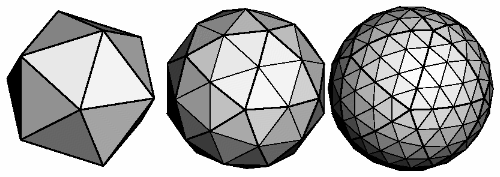
Figure 2-17 : Subdividing to Improve a Polygonal Approximation to a Surface
Example 2-16 performs a single subdivision, creating an 80-sided spherical approximation.
Example 2-16 : Single Subdivision
void drawtriangle(float *v1, float *v2, float *v3)
{
glBegin(GL_TRIANGLES);
glNormal3fv(v1); vlVertex3fv(v1);
glNormal3fv(v2); vlVertex3fv(v2);
glNormal3fv(v3); vlVertex3fv(v3);
glEnd();
}
void subdivide(float *v1, float *v2, float *v3)
{
GLfloat v12[3], v23[3], v31[3];
GLint i;
for (i = 0; i < 3; i++) {
v12[i] = v1[i]+v2[i];
v23[i] = v2[i]+v3[i];
v31[i] = v3[i]+v1[i];
}
normalize(v12);
normalize(v23);
normalize(v31);
drawtriangle(v1, v12, v31);
drawtriangle(v2, v23, v12);
drawtriangle(v3, v31, v23);
drawtriangle(v12, v23, v31);
}
for (i = 0; i < 20; i++) {
subdivide(&vdata[tindices[i][0]][0],
&vdata[tindices[i][1]][0],
&vdata[tindices[i][2]][0]);
}
Example 2-17 is a slight modification of Example 2-16 which recursively subdivides the triangles to the proper depth. If the depth value is 0, no subdivisions are performed, and the triangle is drawn as is. If the depth is 1, a single subdivision is performed, and so on.
Example 2-17 : Recursive Subdivision
void subdivide(float *v1, float *v2, float *v3, long depth)
{
GLfloat v12[3], v23[3], v31[3];
GLint i;
if (depth == 0) {
drawtriangle(v1, v2, v3);
return;
}
for (i = 0; i < 3; i++) {
v12[i] = v1[i]+v2[i];
v23[i] = v2[i]+v3[i];
v31[i] = v3[i]+v1[i];
}
normalize(v12);
normalize(v23);
normalize(v31);
subdivide(v1, v12, v31, depth-1);
subdivide(v2, v23, v12, depth-1);
subdivide(v3, v31, v23, depth-1);
subdivide(v12, v23, v31, depth-1);
}
Generalized Subdivision
A recursive subdivision technique such as the one described in Example 2-17 can be used for other types of surfaces. Typically, the recursion ends either if a certain depth is reached or if some condition on the curvature is satisfied (highly curved parts of surfaces look better with more subdivision).
To look at a more general solution to the problem of subdivision, consider an arbitrary surface parameterized by two variables u[0] and u[1]. Suppose that two routines are provided:
void surf(GLfloat u[2], GLfloat vertex[3], GLfloat normal[3]);
float curv(GLfloat u[2]);
If surf() is passed u[], the corresponding three-dimensional vertex and normal vectors (of length 1) are returned. If u[] is passed to curv(), the curvature of the surface at that point is calculated and returned. (See an introductory textbook on differential geometry for more information about measuring surface curvature.)
Example 2-18 shows the recursive routine that subdivides a triangle either until the maximum depth is reached or until the maximum curvature at the three vertices is less than some cutoff.
Example 2-18 : Generalized Subdivision
void subdivide(float u1[2], float u2[2], float u3[2],
float cutoff, long depth)
{
GLfloat v1[3], v2[3], v3[3], n1[3], n2[3], n3[3];
GLfloat u12[2], u23[2], u32[2];
GLint i;
if (depth == maxdepth || (curv(u1) < cutoff &&
curv(u2) < cutoff && curv(u3) < cutoff)) {
surf(u1, v1, n1); surf(u2, v2, n2); surf(u3, v3, n3);
glBegin(GL_POLYGON);
glNormal3fv(n1); glVertex3fv(v1);
glNormal3fv(n2); glVertex3fv(v2);
glNormal3fv(n3); glVertex3fv(v3);
glEnd();
return;
}
for (i = 0; i < 2; i++) {
u12[i] = (u1[i] + u2[i])/2.0;
u23[i] = (u2[i] + u3[i])/2.0;
u31[i] = (u3[i] + u1[i])/2.0;
}
subdivide(u1, u12, u31, cutoff, depth+1);
subdivide(u2, u23, u12, cutoff, depth+1);
subdivide(u3, u31, u23, cutoff, depth+1);
subdivide(u12, u23, u31, cutoff, depth+1);
}


|